Respuestas a preguntas sobre estrategias y
diversificación
Buenas @Sersan
Sistemas. Misma pelea de los últimos comentarios jaja, pero a ver tu
opinión sobre esto. Mira esta estrategia a 1H, TP y SL fijos (pero en %
no en monetario). Data desde 1 de Enero 2020 hasta la
actualidad.
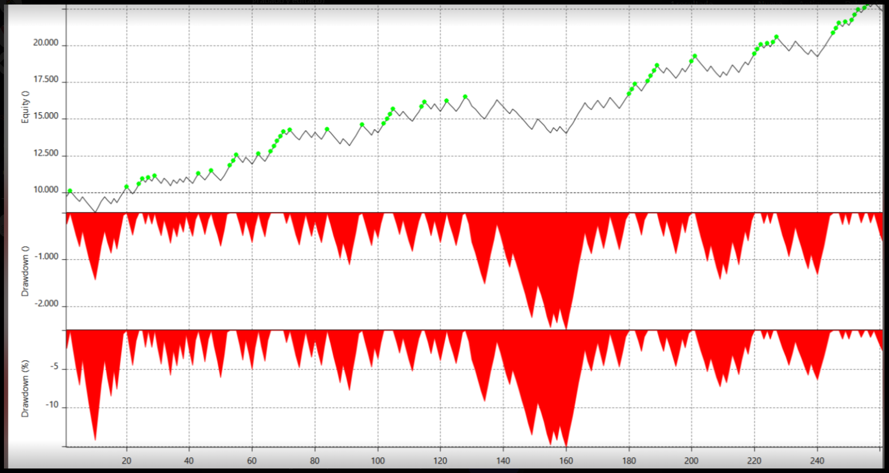
Figura 000
Ahora, mira qué ocurre si corro esta misma estrategia, en una
BBDD de otro Broker con data desde 2015. Desde 2015 hasta hasta 2017 me
parten la madre, 30% de DD. Pero desde 2017 hasta 2020 va excelente (ojo
en data que no ha visto, donde no se ha optimizado nada, inclusive hay
variaciones de precios medio sensibles porque esta BBDD es de un CFD de
ooootro broker, importante esto).
Mi pregunta de nuevo es, ¿qué hace uno en estas ocasiones? Porque
si uno arranca en 2017, cae en DD, y en el plan de supervisión saltan
las alertas y apaga la estrategia, resulta que luego viene el mejor
periodo de la historia que existe para la estrategia. Entonces, mi duda
es: ¿Qué pasa si yo ahora arranco la estrategia y entramos en un periodo
como el de 2015-2017? ¿Cómo te proteges frente a eso?
Sé que el portafolio es lo importante, pero es que todas las
estrategias se funden en algún punto.
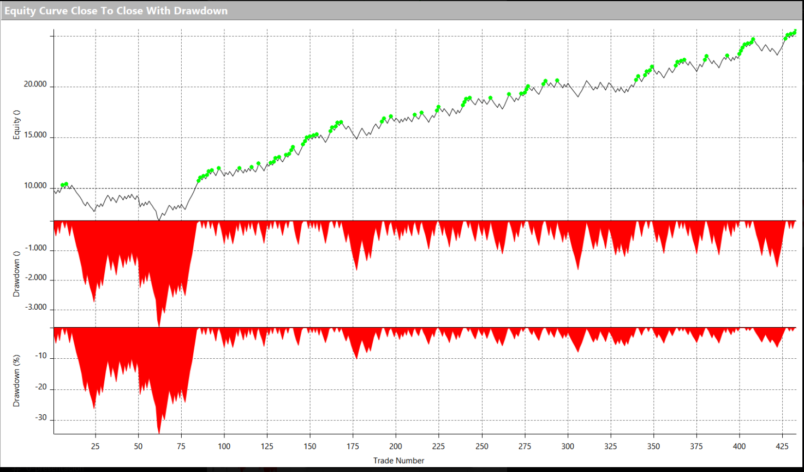
Figura 001
Bueno, ahí comentas que la base de datos cambia bastante y sí, puede
ser. ¿Y qué pasa en un período 2015 donde dices pues, pues que te lo
tragas, Alejandro? Es que la pregunta no es qué pasa, o sea, realmente
esto te va a pasar, ¿me entiendes? Es decir, no es nada extraño. Es
decir, claro, si pensamos que vamos a poner un sistema y va a funcionar
siempre, ¿verdad? Llevamos creo que un menos cuatro este mes, ¿me
entiendes? Quiero decir que al final en esto no hay nada infalible y por
supuesto que hay momentos donde se pierde dinero y se acierta y se
equivoca. No hay magia, no hay trucos y no hay nada que sea
absolutamente infalible.
Entonces yo te voy explicando las maneras de protegerte, pero bueno,
no quiere decir que no te vaya a pasar. Tú comentabas sobre el
portfolio, te he dicho, sí, es que no hay otra, ¿de acuerdo? No
hay otra, ¿vale? La semana que viene, confío, empezar todo el tema del
portfolio y ya pues iremos viendo ejemplos y demás de cómo
aporta una estrategia con otra, etcétera, ¿no? Y cómo recomendamos
nosotros hacerlo incluso pues con cuentas grandes, cuentas pequeñas,
etcétera, ¿vale?
Pero no hay magia y no solo es que pasa en esos casos, sino que es
seguro que te va a pasar que vas a poner una estrategia y va a estar dos
años. Ojalá te pase que solo esté dos años en lateral, ¿de acuerdo? Eso
ojalá sea ese el peor escenario, porque la realidad es que probablemente
vas a poner algún sistema y va a ir fatal. Esto probablemente va a pasar
en algún momento porque nos ha pasado a todos. No es infalible.
Ah, bueno, tú también comentabas lo de apagar las estrategias. Sí,
bueno, claro, hay que ver también cuando saltan las alertas. Claro, las
alertas tienen que estar adaptadas al tipo de sistema. Creo que
comentamos nuestro ejemplo con Némesis que saltaron y no
llegamos a pararlo. O sea, no lo quitamos, los redujimos de peso, y
ahora ha tenido una época muy buena. Es decir, esto puede pasar. Claro,
esto puede pasar, la supervisión tiene que tener en cuenta esto.
Es decir, tú tienes un sistema tendencial como el que
hicimos el otro día, que ahora vamos a ver un poquito rápidamente otra
vez, y es un sistema que tiene períodos malos. Pero es que en los
tendenciales es habitual que con los filtros puedes tratar de
mejorarlo. Sí, puedes tratar de mejorarlo, pero bueno, a lo mejor
también estás sobreoptimizando, ¿entiendes?
Entonces nunca hay una respuesta fácil si es mejor filtrar y filtrar
y filtrar hasta que te quede muy fino, o es mejor asumir que no vaya tan
bien y no filtrarlo tanto, ¿entiendes? Es un tema controvertido y que no
hay una respuesta verdadera o falsa, porque como ya hemos hablado y
sabéis ya, nada garantiza la robustez, nada la garantiza.
Tratamos de fomentarla, pero no la garantiza. Entonces siempre hay un
nivel de duda a este respecto, ¿no?
Y por lo tanto un tendencial puro, a más tendencial más se
parece a la curva de arriba, más se parece a la primera imagen y menos
se parece a la segunda imagen, que es más estable, aunque también tiene
un período malo ahí en el inicio, ¿vale? Pero para entendernos, más
errática es la curva tendencial a más puro, ¿vale?
Entonces la supervisión, claro, tiene que tener en cuenta eso. O sea,
la supervisión o la alerta de parar un sistema tiene que entender si el
sistema hace algo que no debe hacer. O sea, que un tendencial
se pase tiempo lateral no es algo que no deba hacer un tendencial, me
explico. Es decir, entonces lo que tiene que saltar es cuando algo pasa,
algo anormal o fuera de lo previsto. Entonces, claro, eso tiene las
relaciones de supervisión que están adaptadas, ¿no?
⚠️ Principio clave sobre supervisión de
sistemas
La alerta de parar un sistema debe detectar
cuando el sistema hace algo anormal o fuera de lo previsto, no
cuando hace lo que es natural para su tipo. Un tendencial pasando tiempo
en lateral es comportamiento esperado, no una señal de fallo.
Tamaño mínimo de cuenta para operar futuros
Hola @sersan,
expongo mis dos últimas inquietudes:1- ¿Qué tamaño (mínimo y
razonable-ideal) debería tener una cuenta particular para operar
futuros?
Bueno, es una muy buena pregunta y para la cual, nuevamente, no hay
una respuesta única.
Así que te diría que hoy en día esta cantidad se ha reducido mucho,
se ha reducido mucho. Bien, tema cuenta, tema riesgo, ¿no? Bien, como
decía, los micros han ayudado, han ayudado mucho. Para esto
podemos usar la, por ejemplo, la página de TradeStation de
margin que puede ser una referencia buena de cuánto pide el
mercado, para pensar un poco en unos mínimos, que nos puede ayudar,
aunque no es la respuesta única. Pero a partir de ahí podemos empezar a
pensar. Pues claro, también los mercados han ido subiendo y esto ha ido
dificultando, pero al final, fijaros que tenemos ahora un micro
SP, un micro NASDAQ, que están en mil y pico de
mantenimiento. Están en mil y pico, mil cien, mil setecientos. Es una
cantidad que está bien. También tenemos incluso el Russell y el
Dow Jones por debajo de esa cantidad, por debajo de los mil
dólares.
Lógicamente un mini SP pues ya son doce mil, mini
NASDAQ son diecisiete mil. Ya empieza a ser palabras bastante
mayores para empezar. Pero a nivel de micro SP y micro
NASDAQ, incluso tenemos también mini DAX y micro
DAX. El micro DAX tenemos también a mil cien euros y
tenemos también el oro, por ejemplo, que es un futuro que está bien a
nivel de micro. Son mil dólares, son mil dólares el
micro, el micro oro.
Entonces en esta cantidad de los mil dólares tenemos ya varios
futuros para abrir. Quiere decir que hoy en día, para empezar, podrías
hacer una cartera con una cantidad relativamente pequeña. Con diez, con
veinte mil dólares se podría hacer una cartera razonablemente
diversificada. Incluso se podría con menos empezar, pero ya hablando de
una aceptable diversificación, se podría con no demasiada
dificultad.
Insisto que con menos, porque al final, sí, bueno, ahora no lo tengo
aquí listo, pero a ver, lógicamente las garantías, muy muy importante,
no es el vector importante para la cuenta, pero al final es un punto de
partida, es un punto de partida para comparar. Que antiguamente esto no
existía y realmente era mucho más complicado, es un punto de partida,
pero no es lo, no usarlo de referencia. Realmente hay que tener bastante
más esa cantidad.
Bueno, una regla estándar básica para empezar y no complicarse, pues
seguro que lo habéis oído: dos, tres veces el drawdown. Esto es
una regla básica. Pero bueno, ya veremos, lo veremos la semana que viene
con el portfolio. Se puede dar la paradoja que incluso reduzcas el
drawdown o lo mantengas, ¿de acuerdo? Mantengas. A lo mejor
pones un sistema, tienes un drawdown, metes otro y no aumentas
el drawdown, o lo aumentas o muy poco. Entonces claro, esto es
un poco la idea y lo iremos viendo la semana que viene, confío.
Pero puede estar por esta cantidad que he dado de manera cómoda. Y ya
te digo, a este nivel seguro que puedes meter varias estrategias. Por
meter uno, seguramente depende de qué sistema, con bastante menos podría
operar. Con bastante menos, seguramente con 5000 podrías, pero mejor
tampoco, como os digo, seguramente ahí te costaría diversificar.
📊 Referencia práctica sobre garantías y tamaño de
cuenta
Garantías de mantenimiento aproximadas
(2024): • Micro SP, Micro NASDAQ: ~1.100-1.700\(<br>
• Micro Oro: ~1.000\) • Micro DAX: ~1.100€ • Mini SP:
~12.000$ | Mini NASDAQ: ~17.000\(<br><br>
<strong>Regla básica:</strong> Cuenta = 2-3× el drawdown
esperado<br><br>
<strong>Orientación:</strong> Con 10.000-20.000\)
se puede construir una cartera razonablemente diversificada en micros.
Con 5.000$ se podría operar un sistema, pero costaría diversificar.
2.- En la teoría recuerdo que valorabas pros y cons de los
futuros vs CFDs.2.1- Si no me falla la memoria decías: los
CFDs tienen SWAP, en los futuros va implícito? Sí, ya sé que debería
saberlo, pero si me lo refrescas te lo agradecería.
Decías también en esta línea que la teoría recuerdo que valoraba a
favor o en contra de futuros, CFDs, ¿no? Sí, bueno, el swap,
eso es un error también que comete mucha gente: pensaba es que el CFD me
cobra un swap, el futuro no. Y esto es solo verdad a medias,
¿de acuerdo?
Es decir, es cierto que el futuro no te lo cobra como una comisión al
uso, pero veréis que el futuro pues está por encima del… es decir, el
tipo de interés lo lleva implícito. Es verdad que claro, ahí depende
porque si estás corto pues lo puedes, ese gap al final se va
cerrando, puedes decir que lo puedes jugar. Es distinto realmente, es
mejor en el futuro, es mejor.
Pero el CFD te va a cobrar un swap, un interés implícito por
tener las operaciones abiertas, y el futuro esa cantidad no te la va a
cobrar, la tiene implícita en el precio metido, ¿vale? Sin más.
También diferencia principal es que el CFD es un mercado
OTC, ¿vale? Y en cambio un futuro o un ETF, también hablabas
ahí, pues es un mercado regulado, ¿vale?
2.2- En la teoría no hay referencia de comparación de ETFs vs
CFDs. Un ETF cotiza como una acción, y el CFD ya hemos dicho que tiene
SWAP. Si opero ETFs (por ejemplo SPY en lugar del CFD sobre el SPY)
¿ahorraría el SWAP? ¿En los ETFs me castigarían por otro lado?
En la teoría no hay referencia de comparación ETF CFD, es bueno
porque un CFD es un derivado, ¿vale? Y por eso lo comparo con el futuro,
¿de acuerdo? Tiene aparatura. En cambio un ETF en sí es una acción,
entonces se podía, bueno, se puede comparar con una acción, pero es que
es una acción, ¿de acuerdo?
Entonces un ETF al final, sí, si operas el SPY en vez del CFD ahorras
el swap. Sí, en el ETF te castigarían por otro lado, bueno, lo
único que puede haber son custodias, pero realmente es algo muy
insignificante. En principio no se me ocurre con qué te castigan.
La diferencia es que tú no tienes apalancamiento, aunque en realidad
un broker puede dar algo de apalancamiento. El producto en sí
no tiene un apalancamiento implícito, ¿de acuerdo? En cambio un futuro o
un CFD permite apalancarse, ¿vale? Un futuro o un CFD permite
apalancarse y un ETF en principio no.
📏 Diferencia clave: productos derivados vs
contado
Un ETF es un producto de contado y un
CFD o un futuro es un producto derivado que tiene un
subyacente que replica y permite apalancarse. Para exponerte igual
comprando un contrato de micro SP (que requiere ~1.180 USD de
garantía), necesitarías depositar ~25.000 USD si operas el SPY.
Esa es la ventaja del apalancamiento: con 1.100 dólares te expones a
25.000.
Un ETF es un producto de contado y un CFD o un futuro es un producto
derivado que al final tiene un subyacente que replica y permiten
apalancarse, ¿vale? Esa es un poco la diferencia, ¿vale?
Es decir, para que entiendas, para exponerte igual usando este mismo
ejemplo que hemos visto del SP con el micro SP. El micro
SP, la única diferencia, como veis cotizan igual al mismo precio,
la única diferencia que tienen es lógicamente su valor nominal, su
tick. El SP vale 50 dólares el punto, el mini SP. En
cambio el micro SP vale 5 dólares el punto. Entonces eso lo
multiplicas por su precio, ese es el nominal.
Es decir, ¿cuánto es el nominal del micro SP? Pues 25 mil
dólares, ¿de acuerdo? Es decir, tú para exponerte igual al mercado que
lo que te estás exponiendo con un contrato, comprando un contrato del
MES, ¿de acuerdo? Un contrato. Tú compras un contrato, tendrías que
comprar 25 mil dólares del SPY, ¿vale? Y tú estás expuesto igual al
mercado, lo mismo. Probablemente ganarás o perderás algo muy parecido.
El futuro va a tener la diferencia de pues lo que hablamos,
vencimientos, etcétera, hay que arrolar, pero en sí tú estarías
expuesto muy parecido.
Si ahora aquí te pongo el SPY verás que el gráfico es tremendamente
similar. Ahí ya no el precio, porque digamos que tiene otro nivel de
escala, ¿vale? Pero es muy similar, ¿vale? Es muy similar. No va a ser
exacto porque lo que te hablé de los vencimientos, etcétera.
Aparte de, bueno, aquí para que se parezca más tendríamos que hacer
esto, que es abrir el continuo, solo el horario regular, ¿vale? Que es
coincidencia con el contado y ahí aún se parece más, ¿vale? Aún se
parece más.
Pero tú te puedes exponer igual, pero para exponerte igual a la
izquierda te compras un contrato de futuros, para lo cual en la cuenta
te retienen, si lo mantienes, 1.180 dólares. Ese nivel de exposición te
cobran una comisión, no me acuerdo si son dos dólares, no me acuerdo, y
te retienen en la cuenta 1.180. Y si lo quieres hacer con el SPY tienes
que comprar 25 mil dólares y depositar 25 mil dólares.
Es la diferencia. Entonces eso es apalancamiento: que yo con 1.100
dólares me expongo a 25 mil. Entonces espero que esto más o menos haya
quedado clara la diferencia. Entonces la diferencia ante comprar un
contado es ésta. Es decir, no todo tiene su bueno y su malo.
Entonces comprar y operar ETF está muy bien, pero ya digo, necesitas
25 mil dólares para exponerte igual que con un micro SP y eso
solo te pedirá en la cuenta 1.100 dólares. A ver un momento. Bien.
VPS y equipos dedicados para trading
Bueno, había habido preguntas relacionadas con VPS dedicados. Esto al
principio estaba explicado. Yo creo que lo había explicado tanto en
otras prácticas como en la teoría. Pero lo normal si no queréis gastar
mucho es que el PC de investigación sea el vuestro, ¿de acuerdo? Y para
operar que uséis un VPS, porque al final lo suyo es usar un
dedicado.
Pero ya cuando tienes recursos para optimizar, porque quieres tener
libre el tuyo, pero si no, pues con el tuyo vas haciendo análisis y
demás y ya con el dedicado con el VPS operas. Claro, tiene que ser un
procesador potente. Y eso ya os hablé creo que de CPU
Benchmark, que mirarais ahí pues cuánto rinde el procesador.
Cuando os compréis un PC o vayáis a hacer uno o alquiléis un
dedicado, más que fijaros en qué modelo si es i7 si es no, buscarlo
aquí. Venís aquí y ponéis yo que sé i7 lo que sea, el número exacto, que
eso siempre lo encontráis ahí en el sistema. Porque al final no os
guíais por i7. Yo tengo un i7 que tiene 7 años y es una tartana el
pobre. Al final, i7 dice poco. Entonces hay que buscarlo aquí y ver
cuánto puntúa. Entonces cuanto más puntúe mejor. Entonces hay que ver
cuánto vale y todo en la vida.
💻 Recomendación sobre hardware para trading
No
os guiéis solo por el nombre del procesador (i7, i9, etc.). Un i7 de
hace 7 años rinde mucho menos que uno actual. Usad CPU
Benchmark
(cpubenchmark.net) para
comparar la puntuación real del procesador antes de comprar un PC o
alquilar un VPS dedicado.
Repaso del
sistema de sesion pasada: medias móviles
Bien, por hacer un pequeño recordatorio, acordaros que probamos
distintas medias, vimos, hicimos un switch con diferentes
medias para probar distintas. Vimos varias que podían ir bien, vimos por
ejemplo MultiCharts que parecía por ejemplo la 8 bastante
estable, que no era muy afectada, que además nos gustaba porque era como
lógica. La 8, la 8 Exponential Average para la fast y
Average Simple para la más lenta.
TP = TypicalPrice;switch(media)Begincase 1: # Medias simples case 2: # Medias exponenciales case 3: # Kama case 4: # Fama + Mama case 5: # Simple + Exponencial case 6: # Simple + Kama case 7: # Simple + Mama case 8: # Exponencial + Simple case 9: case 10: # Exponencial + Mama case 11: # Kama + Simple case 12: # Kama + Exponencial case 13: # Kama + Mama case 14: # Fama + Simple case 15: # Fama + Exponencial case 16: # Fama + Kama case 17: # Simple + Fama case 18: # Exponencial + Fama case 19: # Kama + Famaend;
Bien, por hacer un pequeño recordatorio, acordaros que probamos
distintas medias, vimos, hicimos un switch con diferentes
medias para probar distintas. Vimos varias que podían ir bien, vimos por
ejemplo MultiCharts que parecía por ejemplo la 8 bastante
estable, que no era muy afectada, que además nos gustaba porque era como
lógica. La 8, la 8 Exponential Average para la fast y
Average Simple para la más lenta.
Que habían varias que daban buen resultado. Lógicamente, un sistema
que tiene que suele ir bien con tendencia, un sistema muy sencillo. Ni
tan sólo probamos a meter el Donchian de filtro, que ya os
digo que mejora. Ya os digo que mejora. Estaba implementado pero no
lo metimos. Sé que tengo pendiente de daros el código.
Y bueno, y hablamos de algunos filtros y había ahí un nivel de
posibilidad de mejora. Y ya dimos algunos tips por donde podían
ir los tiros, ¿vale? Entonces a partir de ahí…
Uso de indicadores Show Me para evaluar
filtros
Bien, esto os quería enseñar cuatro cositas, ¿vale? Mira, igual voy a
quitar esto, voy a quitar, ocultar esto para que sea más fácil y que
vean mejor la pantalla. Y venga, y ya estamos más o menos.
Entonces, esto de los puntitos en los indicadores que se llaman
Show Me en TradeStation, que por ejemplo para evaluar filtros
os lo recomiendo mucho. Entonces, realmente insistiendo mucho en lo que
hemos comentado en la clase de que hay que ver las cosas en el gráfico,
¿vale?
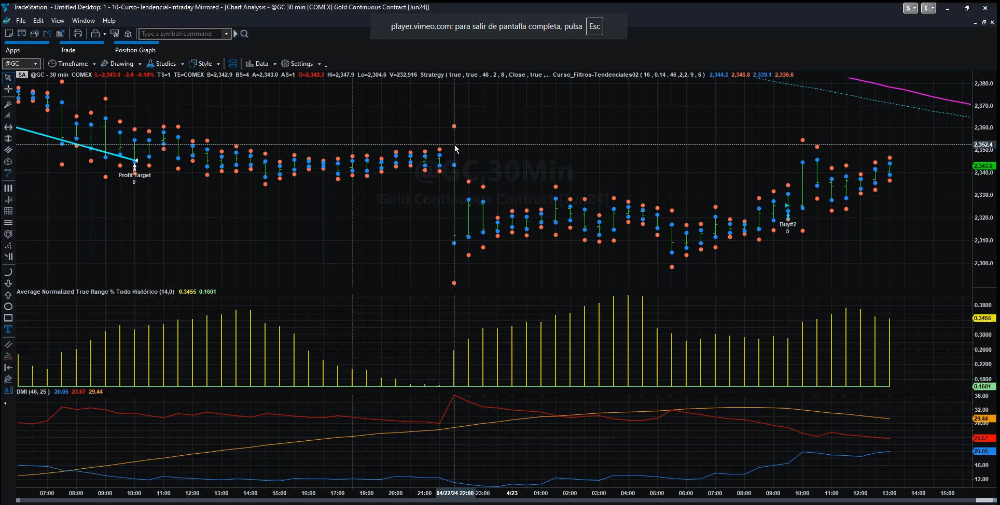
Figura 002
Vosotros tenéis el sistema en bruto. Aquí ahora ya está el sistema.
Espera, que voy a hacer que no pinte.
Sistema de medias con Walk Forward
Entonces, si tenemos, tenemos el sistema, podemos decir en bruto, al
cual ya le hemos hecho un Walk Forward, ahora luego os
enseñaré, ¿vale? Hemos hecho un Walk Forward hoy, ¿vale?
Incluso creo que el Walk Forward no está del todo bien hecho.
Ahora cuando llegue os lo explico.
Porque bien, tenemos aquí el sistema en bruto con la entrada. Al
final nos quedamos, recordad, bloqueamos la media lenta en
slow, calculamos la fast restando la vela
slow. Y al final ha quedado con una media en realidad de 44,
46, que ya se autopinta.
Funcionamiento del filtro Donchian
Pero acordaros con el tipo 8, que es exponencial y
simple. Dejamos esta porque vimos que era bastante robusta. Ni
probamos el Donchian, que os recomiendo que lo exploréis como
filtro adicional, ¿vale? De tendencia, suele mejorar bastante los
laterales y retrasar poco la entrada.
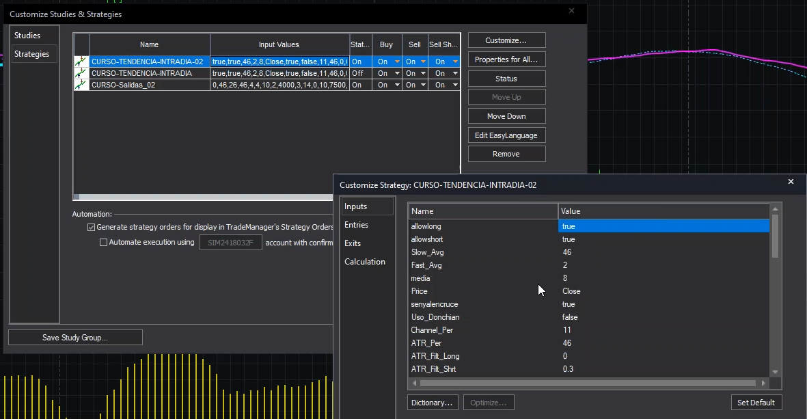
Figura 003
Es decir, al final lo que añade es un canal. Es decir, que cuando
corta no solo necesita la media. Para que entendáis, ¿vale? Qué quiere
decir el filtro Donchian: pues que además de cortar tiene que
superar, por ejemplo, el máximo de n velas, este máximo.
Entonces en vez de comprar por debajo de la línea de puntos pues
hubiera comprado por encima, ¿entendéis?
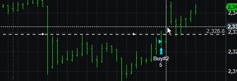
Figura 004
En este caso hubiera comprado más tarde, pero sí que a veces puede
hacer que aquí pues no te venda, ¿vale? A lo mejor te hubiera vendido
aquí igual perdiendo, pero a lo mejor este largo no entra, por ejemplo,
porque no sube lo suficiente, ¿entendéis?
Es decir, suele mejorar los laterales, también algunos los va a
sufrir, pero hay algún tipo de lateral que el canal de Donchian
te va a ayudar un poco a sortearlo, porque no solo va a usar la media,
va a usar también, por ejemplo, este que aseguro que no hubiera entrado,
porque no hubiera roto este nivel de aquí, el mínimo de n barras y no
hubiera entrado.
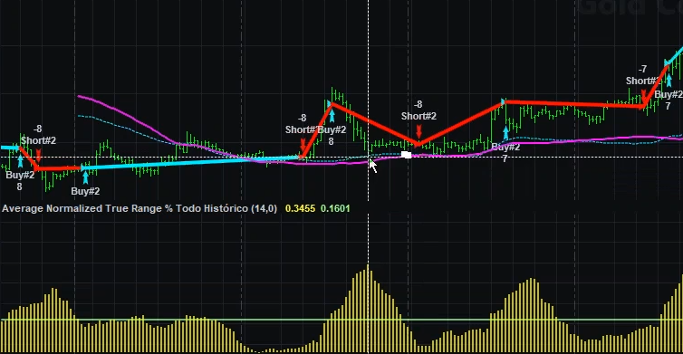
Figura 005
Entonces esta es un poco la idea. Entonces el canal de
Donchian suele complementar bien a un sistema de tendencias
como filtro, como filtro de precios. Pues os lo recomiendo explorar.
Aquí no lo hemos explorado. Si queréis ahora por probarlo un
momentito, no lo he probado la verdad porque he preferido, este ya lo sé
que mejora, entonces no quería tampoco perder el tiempo en dejarnos
pelearnos, ¿vale?
📊 Filtro Donchian como complemento a sistemas de
medias
El canal Donchian añade una condición adicional:
además del cruce de medias, el precio debe superar el máximo (para
largos) o mínimo (para cortos) de las últimas N velas.
Ventajas: • Mejora comportamiento en laterales
• Filtra entradas falsas que no tienen momentum suficiente • Retrasa
poco la entrada en tendencias fuertes
Consideración: Si se añade el Donchian, hay que revisar
las salidas porque estarán adaptadas a entradas más rápidas.
Estado actual del sistema y métricas Fast 2 y
media 8
Eso es cómo estaba la curva que ya habíamos hecho otro día con
comisiones, ¿vale? Y sin demasiada tampoco locura a nivel de
optimización. Es decir, esto es bastante razonable.
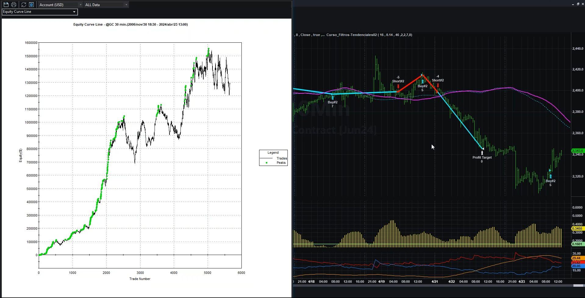
Figura 006
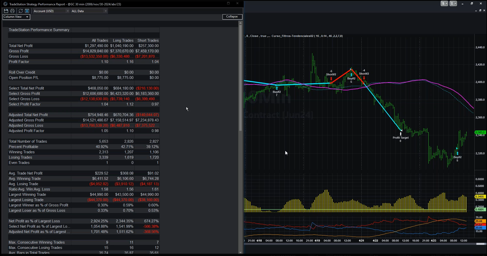
Figura 008
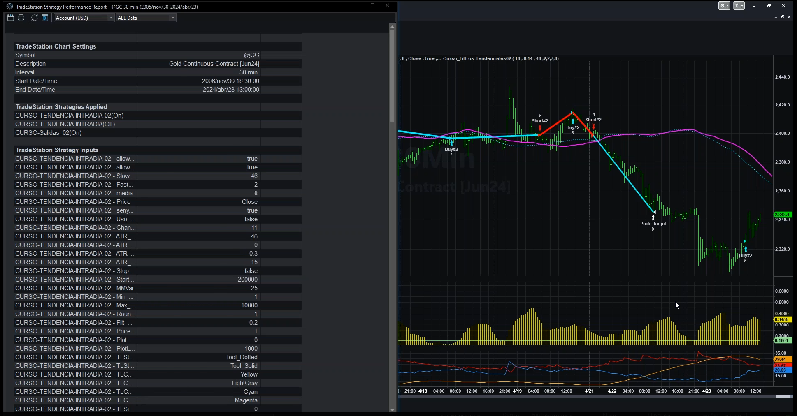
Figura 007
Recuerda que tenemos 5.600 trades, muchos años, ¿vale? Muy
justito en el lado largo pero aceptable. Demasiado justo en el corto, es
verdad que demasiado justo en el corto. Este 1,04 en
realidad no es operable, es muy bajo. Pero bueno, global
1,10 es demasiado justo.
Deberíamos de mejorarlo un poco más para que fuera totalmente
operable, pero está en un punto interesante para trabajarlo, porque son
5.000, todavía no hemos filtrado nada. Simplemente hemos trabajado un
poco las salidas, que sí que ya lo hemos mejorado con las salidas y le
hemos quitado un poquito de tendencialidad.
Pero lo hemos dejado un 40% de acierto, sigue siendo bastante
tendencial aunque no lo hemos dejado totalmente tendencial en el sentido
que corra, porque si no pues puede deteriorar un poco más. Pero ya digo,
aún tiene camino de mejora.
Prueba del filtro
Donchian
Posible mejora es lo que os decía, simplemente activar el
Donchian.
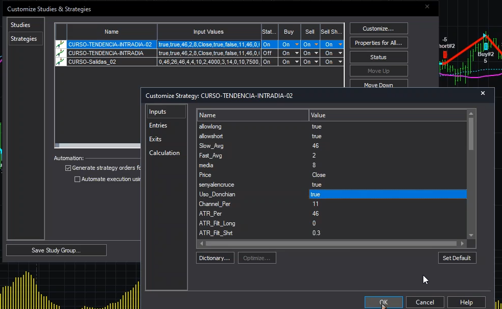
Figura 009
Bueno, aquí ahora tengo las salidas adaptadas, seguramente había que
darle una vuelta a través a las salidas activando esto. Pero aquí activo
el canal, creo que estaba en 11. Y de hecho hemos empeorado así solo. El
lado corto claramente, bueno hemos empeorado todo, pero aquí ahora
mismo, ya digo, las salidas están un poco adaptadas al otro, habría que
ver. Si meto Donchian, porque ahora cuántos trades
tengo, 1.200, le he bajado mucho los trades.
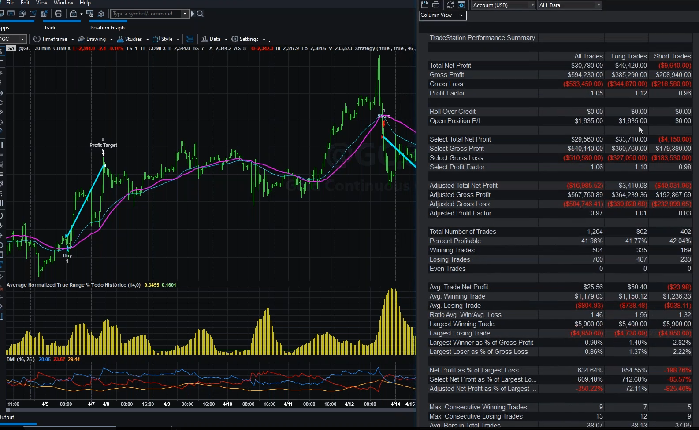
Figura 010
Bueno, este creo que era mejor en false, false
true.
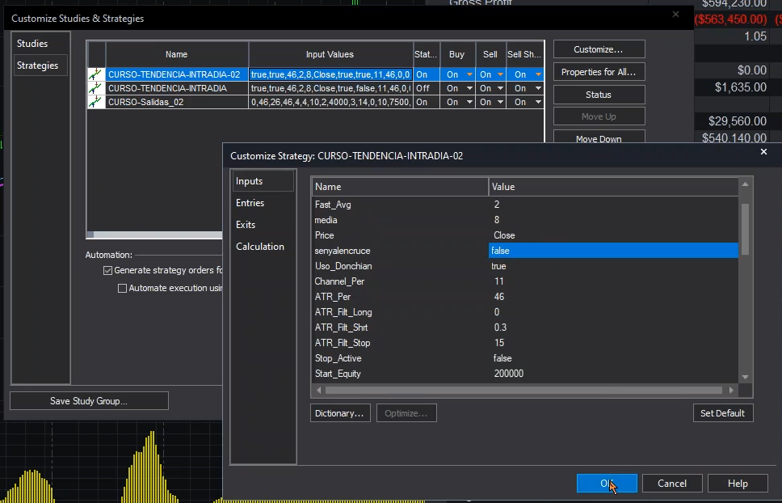
Figura 011
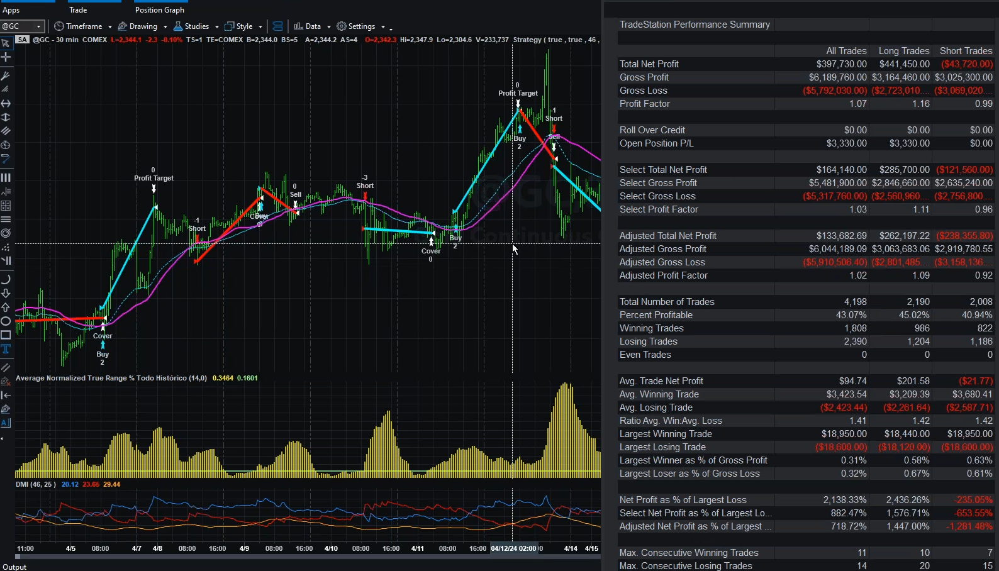
Figura 012
Aquí ya estamos otra vez más parecido a la cruz en 4.400.
Pues aquí es lo que os digo, aquí ya depende de un canal de
Donchian. Que lo normal, habría que ver, habría que ver cuánto,
qué canal. Repito que hubiera sido previo, yo lo hubiera hecho previo a
las salidas. No he querido usarlo porque ya sé que no voy a mejorar así
y automáticamente. Ahí pues jugar un poco con el canal, ver a ver dónde
podemos jugar. No sé, pero dejamos por ejemplo un efecto en una sesión
como está todo lo demás, así va a ser bastante restrictivo y yo diría
que así puede ser que mejore algo.
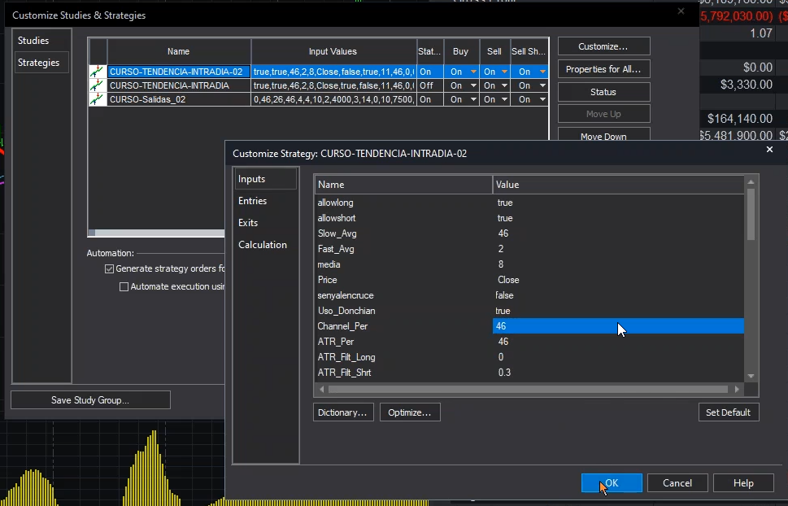
Figura 013
No, el problema es que las salidas están un poco adaptadas ahora al
otro metro. Bueno poquito, poquito estamos en 1,12, no es significativo,
pero ya digo, las salidas están adaptadas. Así como se han mejorado, de
hecho en este último período va a ir realmente mal porque las salidas
están adaptadas.
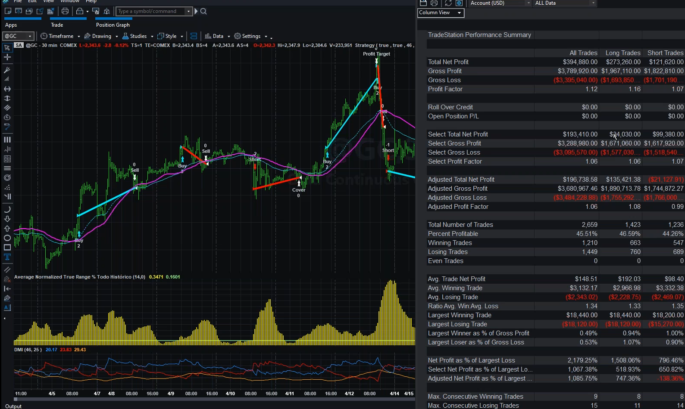
Figura 014
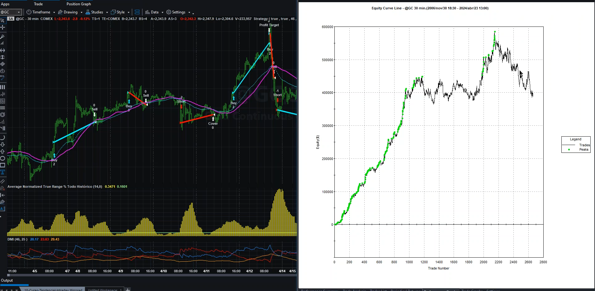
Figura 015
Habría que haber revisado las salidas con posterioridad, porque las
salidas ya os digo están adaptadas a no usar canal de Donchian,
a entradas muy rápidas. Entonces ese es el problema que tiene y además
no estamos controlando las reentradas.
Había activado un poquito de gestión monetaria, por eso habéis visto
mejor los datos un poco distintos. Había activado un poquito de gestión
monetaria para hacerlo un poquito más real, por eso estaba un poquito
distinto. Volvemos aquí a como estaba antes.
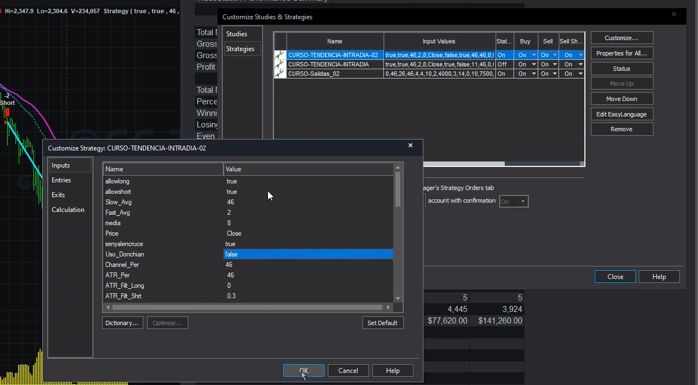
Figura 016
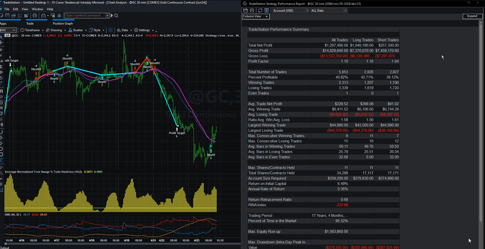
Figura 017
Walk Forward:
análisis con programa externo
Bien, vamos a ver lo que os decía, estáis viendo aquí un Walk
Forward. Tenemos un programa externo, pero da igual, le podéis usar
el de TradeStation, ¿de acuerdo? No difiere, este es más rápido
simplemente, pero es totalmente comparable y no tiene mayor problema.
Este lo hemos estado probando y de hecho todavía lo estamos probando, ya
lo compramos, no era muy caro, era de 500 dólares. Lo estábamos probando
un poco.
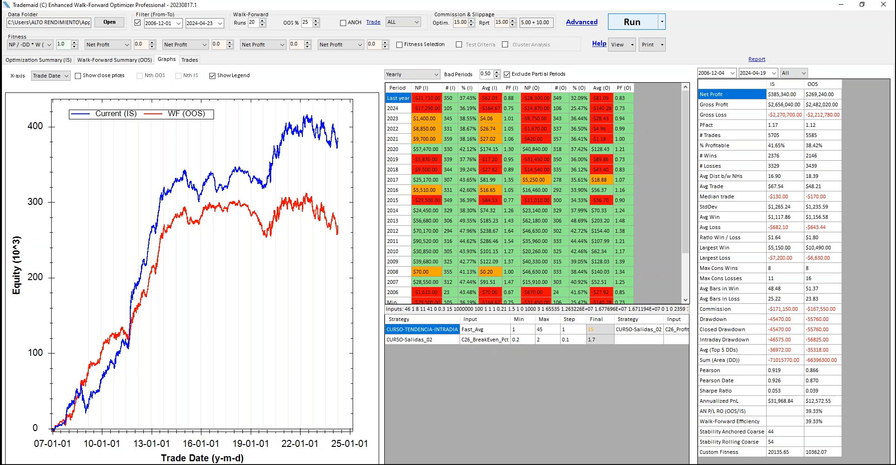
Figura 018
📊 Guía de interpretación del Walk Forward (imágenes
018-022)
🖼️ Imagen 018 - Panel principal de Trademaid: •
Curva azul (Current IS): Rendimiento en In-Sample
(datos de entrenamiento) • Curva roja (WF OOS):
Rendimiento en Out-of-Sample (datos no vistos) • Tabla
central: Resultados año a año, con columnas IS y OOS
separadas • Walk-Forward Efficiency: 39.33% →
Justito (se busca >50%) • La curva roja debería seguir a la azul;
si diverge mucho = sobreoptimización
Bien, hicimos una prueba rápida de Walk Forward a nivel de
cluster, no sé si era este o era el otro. Me parece que era
este otro, vale. Que es un Walk Forward bastante justito. Pero
es verdad que aquí decidimos por probar, salen todos los inputs
de ese programa. Es la verdad que no me gusta porque es mareante, están
todos. Hay las salidas las que no usamos también.
Esta es la ficha del Walk Forward, esta es simplemente las
que optimizamos. Nos quedamos con el filtro 26, con la salida 26, la
verdad que habían varias, habían varias. Y simplemente variamos
esto.
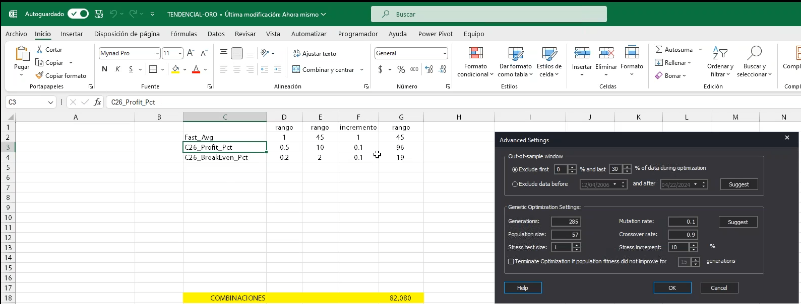
Figura 019
🖼️ Imagen 019 - Parámetros optimizados (Excel): •
Fast_Avg: 1-45 (periodo de media rápida) •
C26_Profit_Pct: 0.5-10% (take profit) •
C26_BreakEven_Pct: 0.2-2% (breakeven) • 82,080
combinaciones totales → El instructor critica dejar oscilar
tanto las salidas
Sinceramente no veo muy claro el hecho de dejar oscilar las salidas,
ni menos tanto para hacer Walk Forward, pero bueno, no está mal
mirarlo, no está mal mirarlo. Pero eso va a dificultar bastante pasarlo,
porque además están en porcentaje, desde que están bien
dimensionadas.
Y sí que a nivel de entradas valorar distintas medias puede tener más
sentido por el hecho de los distintos ciclos del mercado y tratar de a
lo mejor buscar una media que se adapte más a un mercado u otro, o ver
cómo puede variar eso. Al final es una prueba de estrés.
Pero a nivel de filtros y de aquí, dejar oscilar tanto no lo tengo
muy claro. Al menos en Walk Forward convencional. Walk
Forward anchored sí que puede tener más sentido, que es este.
Estáis viendo que es anchored. Tal como habéis visto, esta
optimización hecha en Walk Forward non-anchored no nos lo ha
pasado por muy poco. El anchored lo ha pasado pero también por
poco, también por poco lo ha pasado. De hecho, sobre todo por el
efficiency. Como veis, está siempre alrededor de 50, bastante
justito. El resto da bastante bien y todos por medias, si os fijáis, da
pass claramente (en la columna result).
🖼️ Imágenes - Cluster Analysis: • Matriz
OOS% Runs: Prueba diferentes configuraciones de Walk
Forward • Celdas verdes/azules: Valores de
efficiency (buscar >50%) • Columna Result:
Pass/Fail por cada criterio • Img 021: Non-anchored
→ OVERALL: FAIL (por Walk-forward
Robustness) • Img 020/022: Anchored → OVERALL:
PASS (pero justito, ~50%)
🎯 Conclusión: El sistema pasa el WF Anchored por
poco. Los tendenciales tienen dificultad para pasar Walk Forward porque
dependen mucho de los ciclos del mercado. El instructor recomienda NO
optimizar las salidas en WF (dejarlas fijas) y solo variar las medias.
Pero en cuanto al Walk Forward es más justito. El global es
pass, pero ya digo es justita, pero sobre todo por el Walk
Forward efficiency.
Anchored → OVERALL: PASS
(pero justito, ~50%)
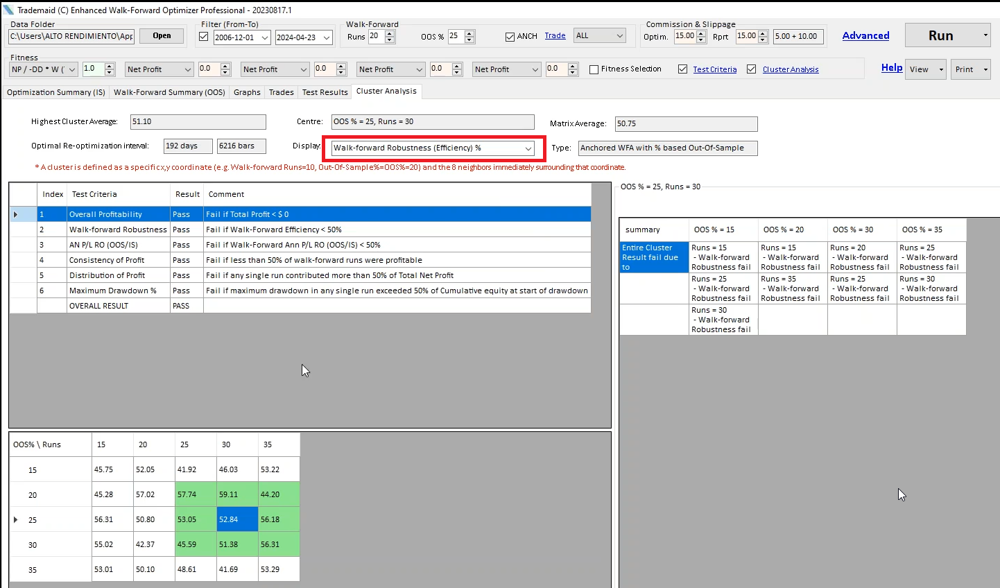
Figura 022
⚠️ Walk Forward en sistemas tendenciales
Es
verdad que para tendenciales es muy complicado pasar el
Walk Forward. ¿Por qué? Porque tiene muchos ciclos. Por
supuesto, si tuviérais un filtro aplicado, tampoco lo apliquéis en
Walk Forward. No tiene ningún sentido ir aplicando ahora un
filtro y valorar en un momento u otro. No es buena práctica, no va a
propagar. En un anchored es más posible.
Es verdad que para tendenciales es muy complicado pasar el
Walk Forward, ya os lo comenté. Es más complicado, ¿por qué?
Porque tiene muchos ciclos. Por supuesto, si tuviérais un filtro
aplicado, tampoco lo apliquéis en Walk Forward. No tiene ningún
sentido ir aplicando ahora un filtro y valorar en un momento u otro. No
es buena práctica, no va a propagar. En una anchored es más
posible, en una anchored es más posible.
Porque en anchored al final lo que vamos haciendo,
recordaros lo que hace la anchored, la anchored aquí,
las fechas veis va de 2006-2009, 2006 va alargando pero la inicial es la
misma.
📊 Interpretación de Walk Forward
Anchored
🖼️ Imagen - In-Sample Summary (Anchored): •
Columna “Period”: Observa que TODAS las filas empiezan
en 2006/12/04 • La fecha final va creciendo: 2009/03/12
→ 2009/12/10 → 2010/09/14 → … • Esto es “Anchored”:
El inicio está “anclado”, la muestra crece con cada run • Cada fila
= una optimización con más datos históricos • Métricas: Net Profit,
Drawdown, % Profitable, Sharpe, etc.
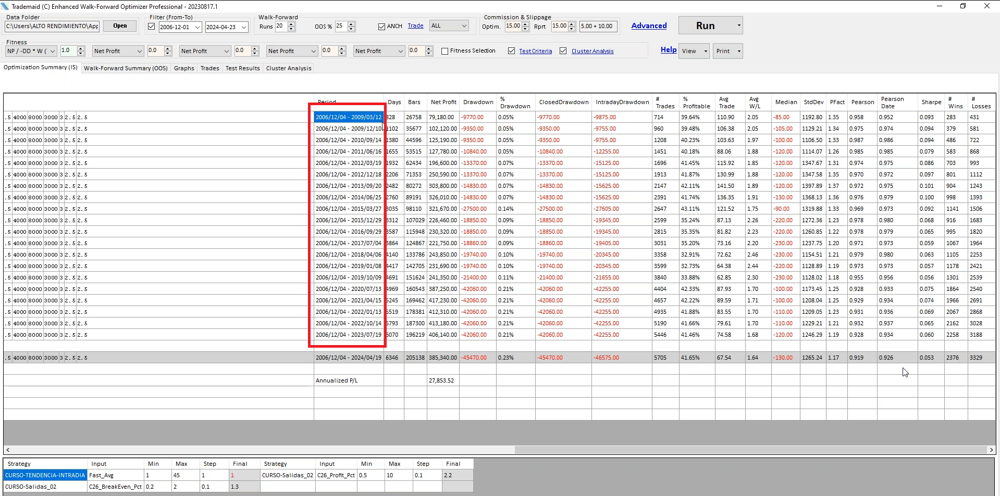
Figura 023
Esto es anchored, la inicial es la misma. Vamos aumentando
la final, cada vez la muestra es mayor.
Lógicamente el out-of-sample sí que va cambiando, es el que
va consecutivamente detrás y vamos eligiendo los parámetros. Y ves que
ahí ves que realmente hay una degradación en los períodos del final,
aunque ya sabíamos porque es así. El mercado se ha detenido mucho y le
ha costado. Aunque ha habido una parte que ha mejorado pero aquí recoge
una parte mala y una parte buena, y por eso aún ha quedado mala. Pero
realmente el oro ha ido perdiendo tendencialidad, al igual que
la bolsa ha ido perdiendo anti-tendencialidad en los últimos
años, el oro ha ido perdiendo.
📊 Interpretación de Walk Forward Anchored
🖼️ Imagen - Out-of-Sample Summary: •
Columna “Period”: Ahora los periodos son consecutivos
(no anclados) • Ejemplo: 2009/03/12-2009/12/10, luego
2009/12/10-2010/09/14, etc. • Cada OOS = el periodo
inmediatamente posterior al IS correspondiente •
Columna Net Profit: Los valores en ROJO son negativos (pérdidas) •
Walk-Forward Efficiency: 50.80% → Apenas pasa el umbral
del 50% º
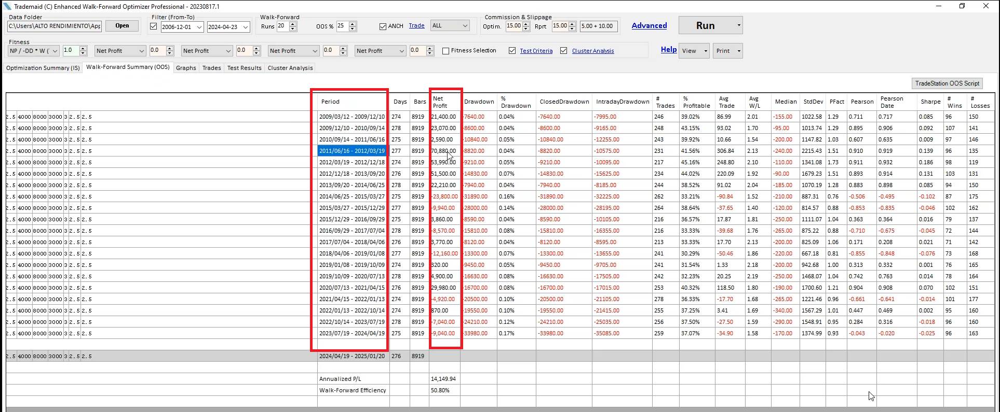
Figura 024
🔍 Qué revela la degradación: • Periodos
2014-2015: Net Profit negativo (-23,800, -9,940) • Periodos
2016-2019: Negativos o muy bajos • Periodos 2022-2024: Degradación
clara (-7,040, -9,040) • Conclusión: El oro ha
perdido tendencialidad en los últimos años, por eso los periodos
recientes muestran peor rendimiento OOS.
📐 Diferencia Anchored vs Rolling: •
Anchored: IS siempre empieza igual, crece → más datos,
más estable • Rolling: IS se desplaza → ventanas
fijas, más adaptativo pero menos robusto
Diversificación con distintos sistemas en el mismo
activo
Y mira, ligando con esto que decía Alejandro en su mensaje que lo
quería comentar antes, se me ha olvidado. Pensar que una de las mejores…
esto lo veréis cuando haya portfolio, pero tú, una de las
mejores cosas que puedes hacer para diversificar, ¿de acuerdo?, es
justamente ahora trabajar otro sistema para el oro. Otro sistema para el
oro.
No necesariamente que sí, que sí que está bien si lo tienes ya en
otro, pero a lo mejor en activos que lo permita. El oro ya os comenté
que va bien a tendencia pero también va bien en mean reversion.
También se puede operar en mean reversion, en eventos o
breakouts. No es necesariamente, aunque lo ha sido, lo ha sido,
ya se que no en esta época mucho tiempo.
Pero realmente ya en los últimos años le ha ido costando y alternando
tanto períodos de tendencia con tendencia que empieza a ser rentable.
Entonces claro, en estos períodos que os ha ido mal a tendencia os va a
ir bien la anti-tendencia, igual aquí. Y aquí os va a ir mal.
Entonces bueno, así lo complementas, ¿entiendes? Así lo
complementas.
Si lo haces en otro activo pues también está bien. Pero ya os digo
que si tú tienes buen control de este activo y puedes perfectamente
hacerlo, buscarle otro sistema que lo descorrelacione. Y luego ya ir a
otros activos, y luego ya ir a otros activos.
Pero ya digo que es una manera muy buena de mejorarlo, porque ahí vas
a ver directamente en qué momentos ha ido bien uno y qué momentos ha ido
bien otro. Y puedes comparar. Tú quieres un sistema que vaya bien en
pues no sé, los años que ha ido mal en tendencia. Puedes centrarte en
ese período y de esa manera, ya digo, se puede conseguir un buen
resultado.
Análisis del Walk Forward global
Bien, entonces ya digo, al final en global es pass, global
es pass, pero es justito, es justito. Sobre todo por esta
parte,
Para sacar el informe y el gráfico de uno de los períodos que nos
gustaran más, Esto al final es 30% out-of-sample,
Vamos a probar.
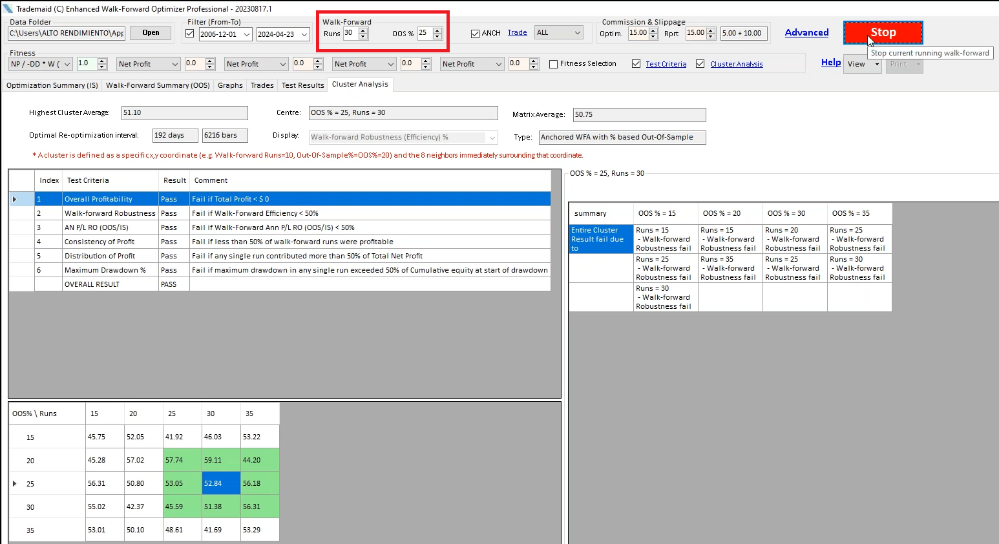
Figura 026
🔬 Qué está haciendo?
🖼️ Imagen 026 - Configuración del Walk Forward: •
Runs = 30, OOS% = 25 → 30 periodos de optimización, 25%
out-of-sample • OVERALL RESULT = PASS → El sistema
pasa la prueba • Matriz inferior: Prueba diferentes
combinaciones de Runs/OOS% • Valores ~50% de efficiency → “justito”
pero pasa • Botón STOP: El WF está corriendo, puede
tardar
Bueno, me gusta, está por aquí. Una de las cosas que me gusta, poder
elegir creo que estaba Pearson esta correlación. Ahora sí debería tardar
poco si no se nos rompe, que a veces se rompe el programa. Esto es sin
filtro ni nada, es simplemente la tendencia con las salidas, o sí, las
salidas.
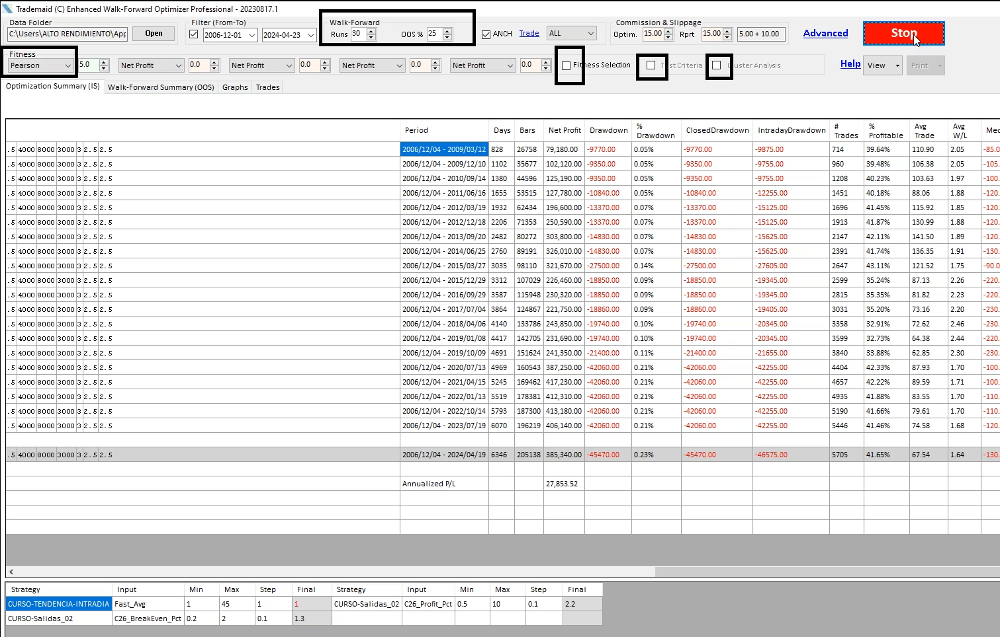
Figura 027
🖼️ Imagen - Cambio de criterio de Fitness:
•
Fitness = “Pearson” con valor 5.0 (marcado
arriba-izquierda) • Fitness Selection activada
(checkbox marcada) • ¿Qué es Pearson? Correlación
que mide la linealidad de la curva de equity • Una curva más “recta”
y consistente = mayor Pearson 📋 Tabla de la imagen
: • Cada fila = un periodo de IS anchored (todos empiezan
2006/12/04) • Números en rojo =
Drawdowns (negativos, es normal) • Columnas clave: Net Profit, %
Profitable, Avg Trade, Sharpe • Annualized P/L:
$27,853.52
🎯 ¿Por qué cambia a Pearson?
El WF con Net Profit como fitness pasaba “justito”
Pearson busca curvas más estables, no solo las que ganan más
Puede producir parámetros más robustos aunque ganen menos
Objetivo principal del Walk Forward
Para aquellos que no les gusta el Walk Forward, que es
respetable, y sé que mucha gente… al final insisto que el principal, lo
dije en la teoría, principal objetivo del Walk Forward no es
usarlo para elegir parámetros. No deja de ser más que una prueba de
estrés. Pueden haber otras pero es una prueba de estrés. Ya está, ¿de
acuerdo?
Al final yo optimizo y aplico, optimizo y aplico. Es algo parecido a
lo que hubiera hecho en esos momentos, ¿de acuerdo? Si yo estuviera
operando el sistema en esa época seguramente hubiera hecho eso. Hubiera
operado, hubiera optimizado hasta ese momento, hubiera dejado un período
fuera de muestra y eso es lo que hago. Ahora tienes lo que lo hago en
muchos distintos períodos y además acumulo mucha información a nivel de
trade, ¿de acuerdo?
Resultados
Fijaros en el enorme lateral que ha hecho el Walk Forward,
que es lo que veíais.
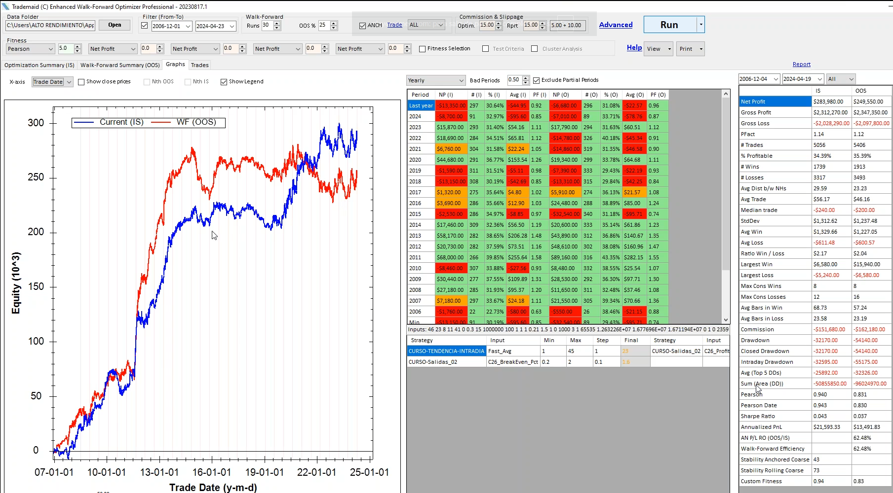
Figura 028
📈 Análisis de resultados del Walk
Forward
🖼️ Imagen 028 - Gráfico de curvas IS vs OOS: •
Curva azul (Current IS): Rendimiento si aplicaras el
último set de parámetros a TODO el histórico • Curva roja
(WF OOS): Rendimiento REAL del Walk Forward (lo que hubieras
ganado reoptimizando) • Walk-Forward Efficiency:
62.48% → Aceptable (>50%) • Net Profit OOS:
$249,550 vs IS: $283,980 • Periodo lateral
2015-2020: La curva roja sufre mucho, no aguanta bien •
Último periodo (2023-2024): Mejora clara, el oro ha
vuelto a ser tendencial
El programa simplemente coge el último set que elegiría, el
current es el que tocaría para operar ahora, El
current al final es el set que tocaría para operar,
que en teoría iría hasta octubre del 24, ¿vale? Octubre del 24. Ya está.
Entonces ese set lo pone en todo el histórico y eso es lo que
para compararlo con el Walk Forward, ¿vale?
Entonces aquí fijaros que el Walk Forward, así que el último
ya ha ido bien porque se está mejor. Como se ha empezado en octubre 24,
ese último ya ha ido, ya ha ido bien ese período. Bueno, que ya es que
ya os he dicho algunas veces, bueno tanto en el curso como los directos
que hago, que había hecho un buen momento el oro, que es al final del
veto lo principal y ha vuelto.
Pero fijaros todos los Walk Forward los anteriores cómo
había ido teniendo muy buenos porque el mercado estaba tendencial. Y
está entonces en los períodos malos. Y que lo ideal es que aguante. Aquí
no aguanta mucho, aquí no aguanta mucho. Es decir, estos períodos son
demasiado malos.
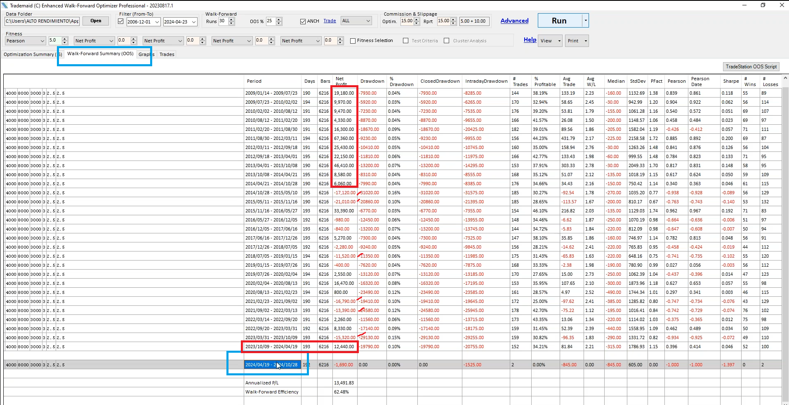
Figura 029
🖼️ Imagen - Detalle de periodos OOS (Rolling): •
Periodos consecutivos (no anchored): cada fila = un
periodo OOS independiente • Columna Net Profit:Rojo = pérdida • Periodos
2014-2016: Pérdidas fuertes (-17,120, -21,010, -980) •
Periodos 2017-2019: Muy malos (mercado lateral) •
Periodo final 2023/10-2024/04: +12,440 → El oro vuelve
a funcionar • Annualized P/L: $13,491.83
Entonces aquí sí que el Walk Forward* recordar que
siempre es con gestión monetaria, no se puede pasar sin gestión
monetaria. Entonces aquí pues bueno te enseña un gráfico.
En TradeStation* también te puedes sacar todo el gráfico y de hecho
me gusta más porque te añade los que va uniendo, los Walk
Forward.
Aquí se ve, ve que uniendo los Walk Forward, pues sí que
realmente lleva mucho tiempo sufriendo. En cambio, todo este último
set que tocaría ahora en histórico, pues la verdad que es
bastante aceptable.
Figura 028
En definitiva, no son malos datos para un tendencial, ¿de
acuerdo? No son malos datos para un tendencial sencillo que no
lo hemos activado en el Donchian. Está totalmente en bruto.
Tiene más de 5.000 trades el oro. Está en bruto absoluto,
recuerdo. Es decir, a partir de ahí se puede aplicar el
Donchian, se puede luego buscar salidas y se puede tratar de
filtrar, ¿vale?
💡 Conclusión:“No son malos datos para un
tendencial sencillo en bruto (sin Donchian, sin filtros), con más de
5.000 trades. A partir de aquí se puede mejorar.”
Filtros
para sistemas tendenciales: evitar expansión
A nivel de filtros, para acabar ya esto, ¿vale?, ir un poco a algo…
bueno creo que eso también es interesante. Pero para ir a otro tema,
¿vale?
A ver si puedo ahora, a ver si puedo ahora en este… me salgo. A nivel
de filtros lo que decía, podéis activar aquí los filtros. Normalmente
los breakout tendenciales, por experiencia os diré que
normalmente vais a poder filtrar más bien por evitar cuando ha habido
mucha expansión, ¿de acuerdo? Eso es lo contrario de los mean
reversion.
🎯 Regla práctica para filtros
En sistemas
tendenciales y breakout, el filtro más efectivo suele
ser evitar operar cuando ya ha habido mucha expansión de volatilidad.
Cuando ya ha habido una expansión en una dirección, normalmente cuesta
que haya más. Lo contrario aplica para sistemas de mean
reversion.
Entonces ese es un poco el tema. Es decir, y a partir de ahí hay que
explorar. Hemos probado algunos, hemos probado algunos sencillitos y
pues bueno hemos mejorado algo, no muchísimo, pero sé que algo, ¿de
acuerdo? Sé que algo.
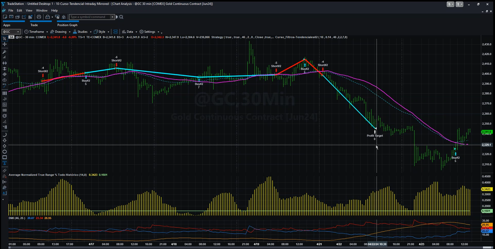
Figura 030
🖼️ Imagen 030 - Gráfico principal con indicadores:
• Medias móviles: Cyan (lenta) y Magenta (rápida) •
Panel inferior 1: “Average Normalized True Range % Todo
Histórico” = ATR normalizado (0.34 y 0.16 son los niveles) •
Panel inferior 2: DMI (46, 25) con valores ADX •
Señales Buy#2 y Short#2 del sistema tendencial
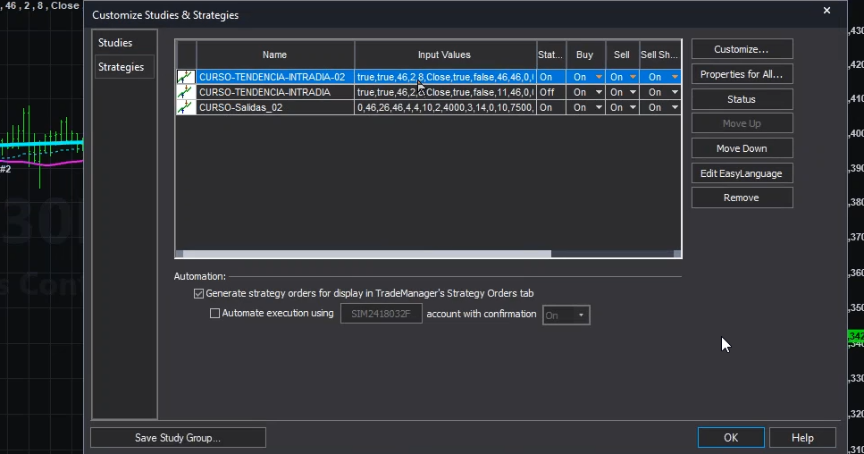
Figura 031
🖼️ Imagen 031 - Lista de estrategias: •
CURSO-TENDENCIA-INTRADIA-02: ON
(activa) • CURSO-TENDENCIA-INTRADIA: OFF (desactivada) •
CURSO-Salidas_02: ON
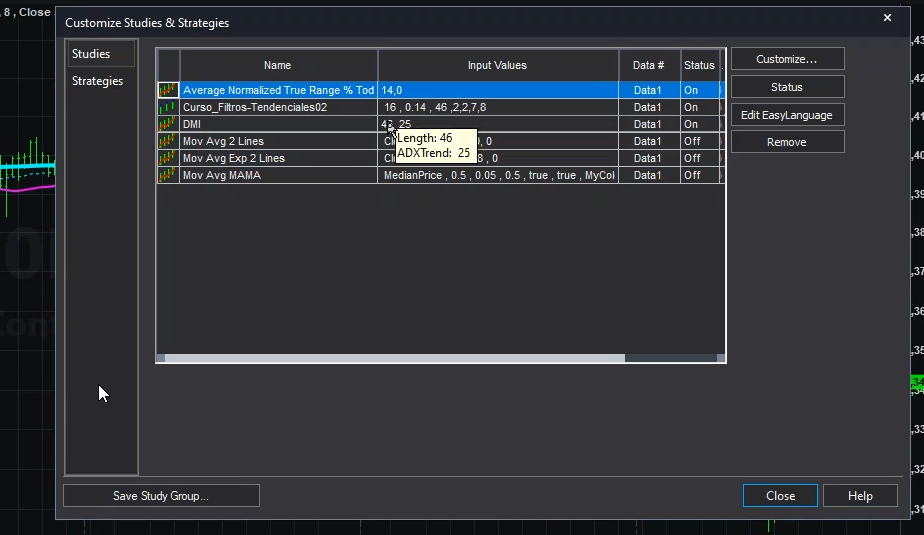
Figura 033
🖼️ Imagen - Lista de indicadores (Studies): •
Curso_Filtros-Tendenciales02: ON →
Este es el indicador “Show Me” que pinta los filtros • Average
Normalized True Range: ON • DMI: ON
# FILTROS "Show Me"** : Curso_Filtros-Tendenciales02 Input: Nivel_ADX(16),Nivel_ATR(0.14),Barras(46),Rango1(2),Rango2(2),FiltroY(9),FiltroN(6);ifnot NuestrasPatternDirectionalFast(+FiltroY,Nivel_ADX,Nivel_ATR, Barras, Rango1, Rango2)thenPlot1(High,!("FltTrue_LE"))# pinta cuando el filtro NO permite operarElseNoplot(1);ifNuestrasPatternDirectionalFast(+FiltroN,Nivel_ADX,Nivel_ATR, Barras, Rango1, Rango2)thenPlot2(High + ((H- L)/ 2),!("FltFalse_LE"))# pinta cuando el filtro NO permite operarElseNoplot(2);ifnot NuestrasPatternDirectionalFast(-FiltroY,Nivel_ADX,Nivel_ATR, Barras, Rango1, Rango2)thenPlot3(Low,!("FltTrue_SE"))# pinta cuando el filtro NO permite operarElseNoplot(3);ifNuestrasPatternDirectionalFast(-FiltroN,Nivel_ADX,Nivel_ATR, Barras, Rango1, Rango2)thenPlot4(Low-((H- L)/ 2),!("FltFalse_SE"))# pinta cuando el filtro NO permite operarElseNoplot(4);
Uso de
indicadores Show Me para visualizar filtros
A nivel sobre todo para que veáis lo que os decía, me voy a poneros
un ejemplo que casi va a ser más fácil que lo veáis. Por ejemplo, el
casewide spread ¿Cuál es el wide spread,
Alberto? Son case 4
# Function: NuestrasPatternDirectionalFast.ELDinput: numeropattern(numericsimple),Nivel_ADX(numericsimple),Nivel_ATR(numericsimple),Barras(numericsimple),Rango1(numericsimple),Rango2(numericsimple);var: FiltroADX(False),Filtro_ATR(False),oDMIPlus(0),oDMIMinus(0),oDMI(0),oADX(0),oADXR(0),oVolty(0);Value1 = DirMovement (H, L, C, Barras, oDMIPlus, oDMIMinus, oDMI, oADX, oADXR, oVolty);Switch(numeropattern)Begincase 1: begin If Nivel_ADX > 0 Then Begin FiltroADX = oDMIPlus > Nivel_ADX; end Else Begin FiltroADX = True; End; NuestrasPatternDirectionalFast = FiltroADX; end; case -1: begin If Nivel_ADX > 0 Then Begin FiltroADX = oDMIMinus > Nivel_ADX; end Else Begin FiltroADX = True; End; NuestrasPatternDirectionalFast = FiltroADX; end; Case 2: begin If Nivel_ATR > 0 Then Filtro_ATR = AvgNormalizedTrueRange(Barras) < (Nivel_ATR) Else Filtro_ATR = True; NuestrasPatternDirectionalFast =Filtro_ATR; end; case -2: begin If Nivel_ATR > 0 Then Filtro_ATR = AvgNormalizedTrueRange(Barras) < (Nivel_ATR) Else Filtro_ATR = True; NuestrasPatternDirectionalFast =Filtro_ATR; end; Case 3: NuestrasPatternDirectionalFast = NarrowRange(RANGO1); Case -3: NuestrasPatternDirectionalFast = NarrowRange(RANGO1); Case 4: NuestrasPatternDirectionalFast = widespread(RANGO2); Case -4: NuestrasPatternDirectionalFast = widespread(RANGO2); case 5: begin If Nivel_ADX > 0 Then Begin FiltroADX = oDMIPlus < Nivel_ADX; end Else Begin FiltroADX = True; End; NuestrasPatternDirectionalFast = FiltroADX; end; case -5: begin If Nivel_ADX > 0 Then Begin FiltroADX = oDMIMinus < Nivel_ADX; end Else Begin FiltroADX = True; End; NuestrasPatternDirectionalFast = FiltroADX; end; Case 6: begin If Nivel_ATR > 0 Then Filtro_ATR = AvgNormalizedTrueRange(Barras) > (Nivel_ATR) Else Filtro_ATR = True; NuestrasPatternDirectionalFast =Filtro_ATR; end; case -6: begin If Nivel_ATR > 0 Then Filtro_ATR = AvgNormalizedTrueRange(Barras) > (Nivel_ATR) Else Filtro_ATR = True; NuestrasPatternDirectionalFast =Filtro_ATR; end; case 7: NuestrasPatternDirectionalFast = true; case -7: NuestrasPatternDirectionalFast = true; case >8: NuestrasPatternDirectionalFast = false; case <-8: NuestrasPatternDirectionalFast = false;end;
🖼️ Imagen - Configuración del Show Me
“Curso_Filtros-Tendenciales02”
Parámetros generales (se pasan a la función): •
Nivel_ADX = 16: Umbral para filtros basados en DMI
(cases 1, -1, 5, -5) • Nivel_ATR = 0.14: Umbral
para filtros basados en volatilidad (cases 2, -2, 6, -6) •
Barras = 46: Periodo de cálculo (una sesión de 30
min) • Rango1 = 2: Para NarrowRange, case 3 (vela
más estrecha que las últimas 2) • Rango2 = 7: Para
WideSpread, case 4 (vela más grande que las últimas 7)
Los selectores de filtro: • FiltroY =
7: Usa el case 7, que siempre devuelve true. No
hay condición especial para permitir operar, siempre permite. •
FiltroN = 4: Usa el case 4 =
WideSpread(Rango2). Cuando detecta una vela expandida
respecto a las últimas 7, devuelve true y el Show Me pinta
un punto (bloqueo).
Lo que verás en el gráfico: • Como FiltroY = 7
(siempre true), Plot1 y Plot3 nunca pintarán (porque
not true = false) • Como FiltroN = 4 (WideSpread),
Plot2 y Plot4 pintarán los puntos naranjas cada vez que
haya una vela con rango mayor que las últimas 7
Esos puntos naranjas son los momentos donde el filtro WideSpread
bloquearía la entrada si estuviera activo en el sistema real.
Esto lo tengo activado en el momento que filtraría si lo hubiera, si
lo hubiera activado simplemente para que entendáis la manera de mirar
los filtros, ¿vale?
Al final los programas, un indicador es un ejemplo, es un indicador
que pinte la pantalla cuando actuaría el filtro, ¿vale? Y de esta manera
yo os recomiendo muchísimo mirar los gráficos. Os lo dije mucho en la
teoría y como digo no entiendo la gente que no lo hace. Recuerdo, hay
que mirar el gráfico porque tienes que entender por qué y ver qué
buscáis y si está haciendo lo que queréis que haga, ¿vale? Entonces esta
es una de las maneras.
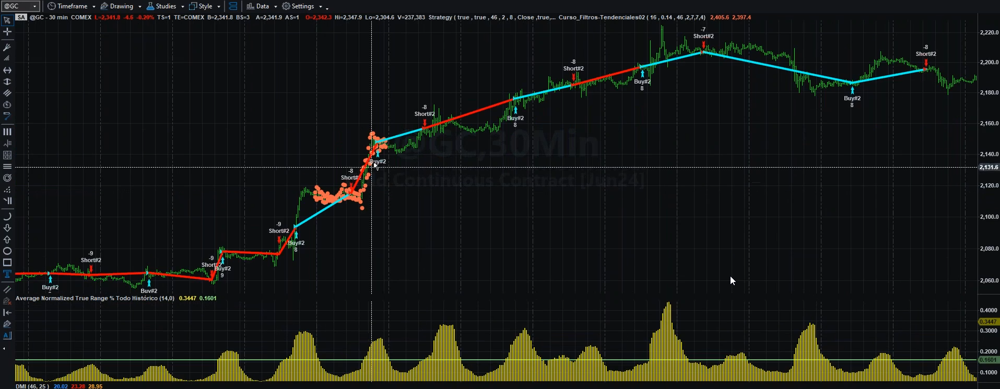
Figura 035
🖼️ Imagen 035 - Visualización del filtro (puntos
naranjas): • Los puntos naranjas = velas
donde WideSpread(7) = TRUE (rango mayor que las últimas 7
velas) • Interpretación: Si el filtro estuviera
activado en el sistema y este intentara entrar en esos puntos, NO lo
permitiría • Observa que los puntos naranjas aparecen en la zona
lateral/consolidación (2120-2140) • El filtro hubiera evitado
entradas malas tras expansiones fuertes
💡 Metodología recomendada:
Crear un indicador “Show Me” que pinte cuando el filtro actuaría
Visualizar en el gráfico si tiene sentido
Ajustar parámetros viendo el gráfico (no solo optimizando a ciegas)
Probar con el optimizador una vez entendido visualmente
Implementación de
filtros con switch-case
Entonces hemos probado distintos filtros. Nuevamente, la manera de
programarlos es igual con el case, ¿vale?
# NUESTRASPATTERNDIRECTIONALFAST.ELDinput:var:Value1 = DirMovement (H, L, C, Barras, oDMIPlus, oDMIMinus, oDMI, oADX, oADXR, oVolty);Switch(numeropattern)Begincase 1: ... case -1: ... Case 2: ... case -2: ... Case 3: NuestrasPatternDirectionalFast = NarrowRange(RANGO1); Case -3: NuestrasPatternDirectionalFast = NarrowRange(RANGO1); Case 4: NuestrasPatternDirectionalFast = widespread(RANGO2); Case -4: NuestrasPatternDirectionalFast = widespread(RANGO2); case 5: ... case -5: ... Case 6: case -6: case 7: NuestrasPatternDirectionalFast = true; case -7: NuestrasPatternDirectionalFast = true; case >8: NuestrasPatternDirectionalFast = false; case <-8: NuestrasPatternDirectionalFast = false;end;
Cases positivos y negativos
Case 1 → Filtro para LARGOS (usa DMI+)
Case -1 → Filtro para CORTOS (usa DMI-)
Case 2 → Filtro para LARGOS (usa ATR)
Case -2 → Filtro para CORTOS (usa ATR)
El signo permite aplicar filtros diferentes según la dirección de la
operación. Aunque en muchos casos (como WideSpread) el filtro es igual
para ambos lados. El código está preparado para que puedas tener un
filtro diferente para largos y para cortos, aunque en este ejemplo no lo
usa así. Es una flexibilidad del diseño.
Las funciones NarrowRange y WideSpread
NarrowRange(n) → TRUE si la vela actual es más
estrecha que las últimas n velas
WideSpread(n) → TRUE si la vela actual es más
grande que las últimas n velas
Son opuestos.
Sobre el ADX
Menciona que han probado con las líneas del DMI separadas (DMI+ y
DMI-), pero que también se puede probar con el ADX general. Sugiere dos
ideas: - No operar cuando ADX muy alto (tendencia ya establecida, llegas
tarde) - Operar cuando ADX muy bajo (antes de que empiece la
tendencia)
Es decir, probar distintas reglas de filtrado.
La metodología
Está diciendo que los filtros se prueban igual que las entradas y
salidas: 1. Optimizar para ver resultados numéricos 2. Pero también
verlo en pantalla con el Show Me 3. Combinar ambos enfoques
Y las vais probando de la misma manera que las entradas y las
salidas. Esto, insisto, ya sabéis que el código tenemos la intención de
dároslo todo. Y de esta manera vais probando y vais por un lado probando
los resultados con el optimizador, entenderlo, pero también viéndolo en
pantalla. Al final es hacéis el indicador que lo pinta, hasta el
indicador que lo pinta, y de esta manera lo veis.
📊 Funciones de filtrado disponibles
NarrowRange(n): Detecta velas con rango más estrecho
que las últimas n velas. Indica compresión de volatilidad, potencial
previo a expansión.
WideSpread(n): Detecta
velas con rango expandido respecto a las últimas n velas. Indica que ya
ha habido expansión de volatilidad.
ADX:
Indicador de fuerza de tendencia (Average Directional Index). Se puede
filtrar por ADX alto (tendencia establecida) o ADX bajo (sin tendencia
clara).
case 4 Filtro : Wide
Spread
Es decir, evitar entrar después de mucha expansión, ¿entendéis? Es
decir, una vela de expansión de novedad, evitar entrar ahí. Eso es un
poco lo que busca. Por ejemplo, evitar entrar después de tres días de
subida, ¿entendéis? De tres días de bajada. Este tipo de filtros donde
ha habido ya mucha expansión o mucha direccionalidad. Y tener
imaginación, tener imaginación en eso con la observación del gráfico,
con la experiencia.
Esto ya digo que en general los de expansión suelen aportar. Evitar
momentos de fuerte expansión, ¿por qué? Porque cuando ya ha habido una
expansión en una dirección, normalmente cuesta que haya más. Que hay
momentos que sí, sí, pero normalmente cuesta. Entonces si filtráis eso
pues suele aportar.
Aquí, si no recuerdo mal, con el wide spread 9 o algo así
solía dar buenos. Parece que sí que mejoraba algo.
Rango2 es el parámetro que se pasa a la función WideSpread().
Cuando el instructor dice “wide spread 9”, se refiere a:
WideSpread(9) → Comparar la vela actual con las últimas 9
velas
Si la vela actual es más grande que las 9 anteriores → devuelve
TRUE
Cambio Rango2 de 7 a 9 en el indicador Show Me. Esto hace que el
filtro sea menos restrictivo (necesita una vela mayor que las últimas 9,
no 7). Eso significa que configuro WideSpread(9) para visualizar en qué
momentos la vela actual supera el rango de las últimas 9.
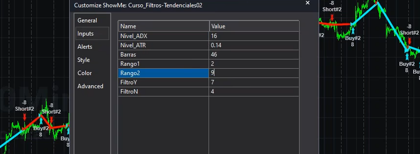
Figura 036
Muestra el resultado visual después de configurar Rango2 = 9. Los
puntos naranjas marcan dónde WideSpread(9) = TRUE. Estoy verificando
visualmente si tiene sentido antes de subir a 10 y activarlo en el
sistema real.
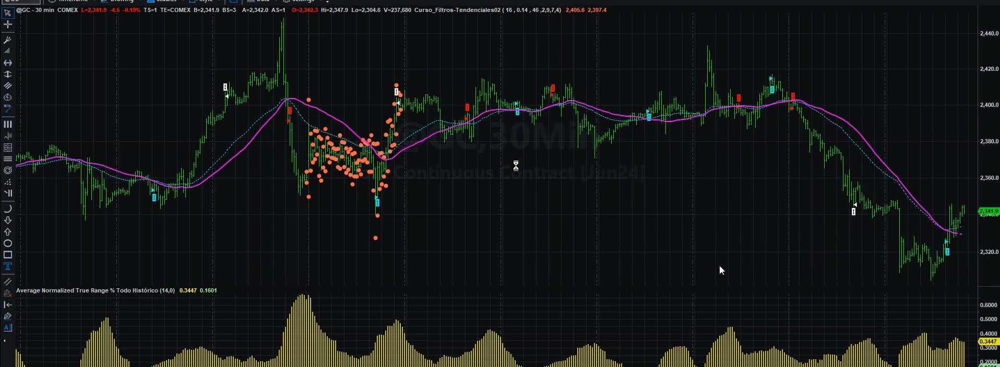
Figura 039
A ver, incluso hasta 10. Evitar entrar cuando haya habido una vela
que tiene mayor rango que las nueve anteriores, ¿vale? Eso es un
wide spread de 10. Lo vimos con el RV, lo comentamos
con los dos.
Aquí configuro el sistema real (CURSO-TENDENCIA-INTRADIA-02):
Parámetro
Qué detecta
Rango1
Case 3 / -3
NarrowRange(Rango1)
Velas estrechas (compresión)
Rango2
Case 4 / -4
WideSpread(Rango2)
Velas grandes (expansión)
Configuro Rango2 = 10 → Le dice al case 4 (WideSpread):
“Compara con las últimas 10 velas”
Cuándo actúa
FiltroN (No)
Condición para BLOQUEAR operar
Si es TRUE → bloquea
FiltroY (Yes)
Condición para PERMITIR operar
Si es FALSE → bloquea
Configuro FiltroN = 4 → Le dice al sistema: “Usa el case
4 como filtro de bloqueo”
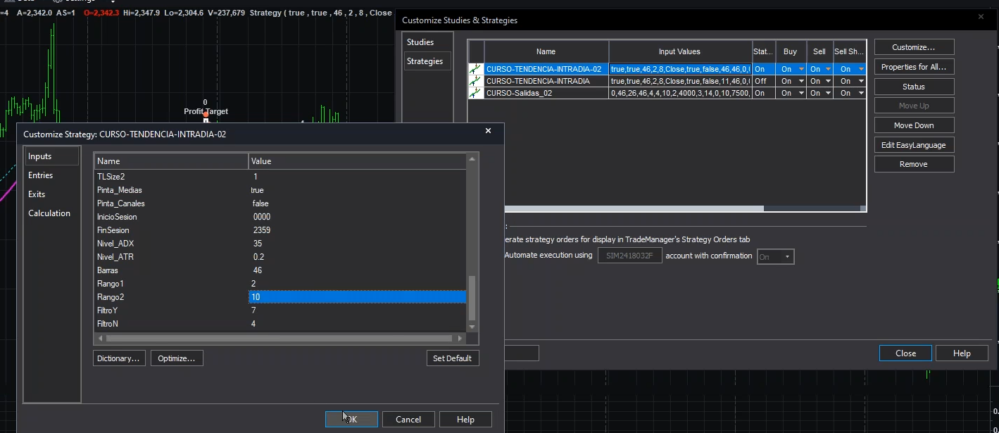
Figura 038
Y vemos que hay momentos que evita y que creo que ha mejorado
algo.
Esto significa que el sistema realmente bloquea entradas cuando
WideSpread(10) = TRUE.
Sí ha mejorado algo, sí, sí, ha mejorado algo. Esto ya ha quitado
simplemente algunas operaciones.
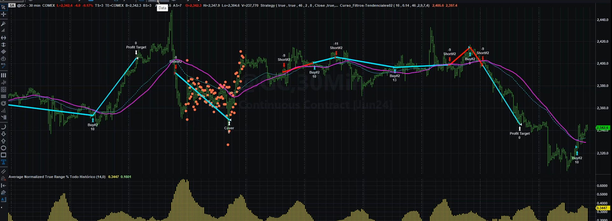
Figura 040
También se puede buscar, ya os digo, también abrir cuando haya
narrows, ¿vale? Pero en un tendencial, estos filtros
van muy bien en breakouts, ¿vale? Porque en el
breakout al final es un movimiento puntual. Pero los
tendenciales para entrar cuesta más, porque al final te va a
evitar pillar tendencias un poco más largas. Pero también puede ser.
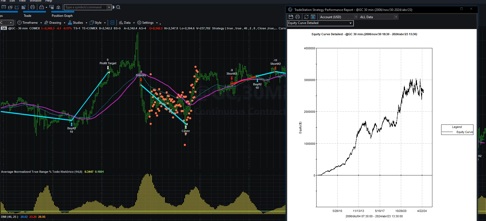
Figura 041
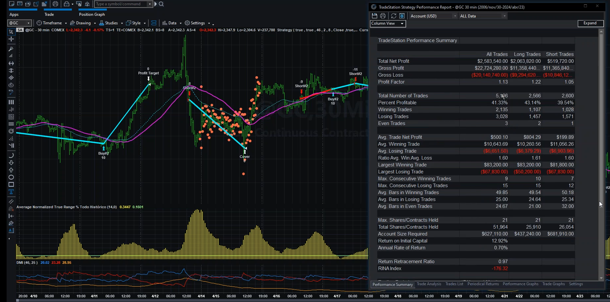
Figura 042
case 3 Filtro : Narrow
Range
A ver, podemos probarlo rápidamente porque no tarda mucho. Sea un el
narrow que era 3,
Case 3: NuestrasPatternDirectionalFast = NarrowRange(RANGO1);Case-3:NuestrasPatternDirectionalFast = NarrowRange(RANGO1);
sí, le pongo narrow en el 3. Este yo creo que si le pongo
cero no actuaría, ¿o cómo va? Lo podíamos poner que sí, que es con cero
no actúe. Es una manera así de filtrarlo fácil.
Ahora activar AMBOS filtros a la vez:
Parámetro
Valor
Case que usa
Qué hace
FiltroY
3
NarrowRange(Rango1)
Solo PERMITE operar si hay compresión
FiltroN
4
WideSpread(Rango2)
BLOQUEA si hay expansión
Configuración: - Rango1 → Para NarrowRange (vela más
estrecha que las últimas N) - Rango2 = 10 → Para WideSpread
(vela más grande que las últimas 10)
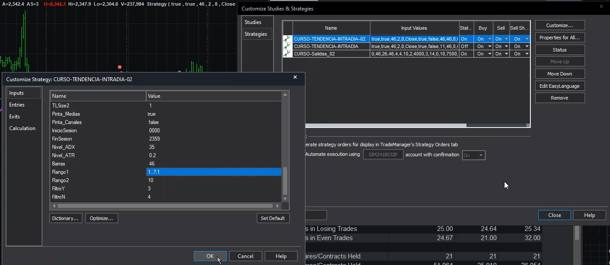
Figura 043
Pero vaya, yo creo que mucho irá con uno. Es que es muy restrictivo
esto, creo que no va a aportar lo que para entrar, no va a aportar,
porque es demasiado, es muy restrictivo. Si al final estás pidiendo que
haya un narrow para entrar, entonces muchas veces si no lo hay,
no entra. Tienes nada, va a ir mucho peor.
Es muy restrictivo el narrow, Alberto, para entrar. Es muy
restrictivo en un tendencial. Es mejor por el lado contrario:
evitar aquellos momentos de mercado que no te van bien, que el hecho de
favorecer mercados que te van bien. Solo entrar cuando te vaya, entonces
te filtra demasiado.
Te filtra demasiado. Es más fácil filtrar por el caso, por el lado
del no, de las maneras. Podemos mirar los datos ahí o no te creo. Le he
dado al sí, ves, nada, muchísimo menos, todo es mucho peor, todo es
mucho peor, todo es mucho peor.
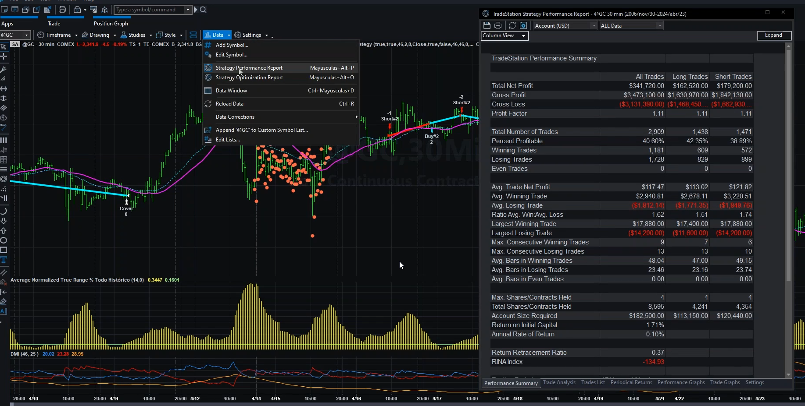
Figura 045
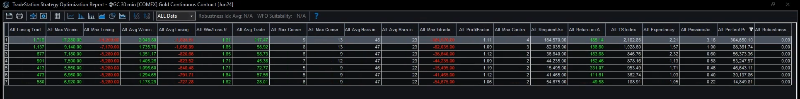
Figura 044
O no, el filtro de narrow es demasiado restrictivo para un
tendencial. Es filtro demasiado restrictivo para un
tendencial. Creo que miramos que el ADX se aportaba
algo, pero no vamos a perder más tiempo en esto. Ya os pasaremos todos
estos códigos.
case 7 WideSpread
7 y 8 es el wide spread. Incluso a ver, una cosa, ya tengo
curiosidad si ya está aquí.
case 7: NuestrasPatternDirectionalFast = true; case -7: NuestrasPatternDirectionalFast = true;
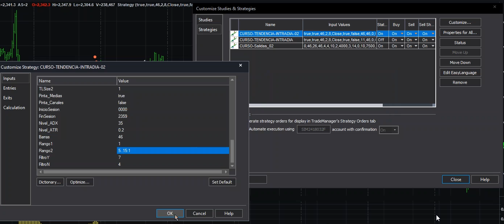
Figura 046
Tenemos aquí, sé que ya se ve bastante mejora, bastante mejora. Ya es
otra cosa, bastante mejora, ahí lo he puesto. Bueno, era una prueba
tampoco, 900 y con 10.
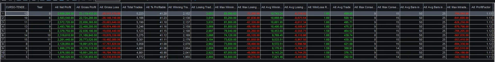
Figura 047
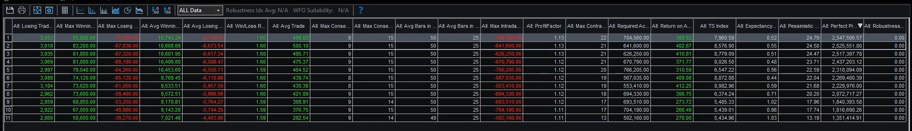
Figura 049
click en el 2
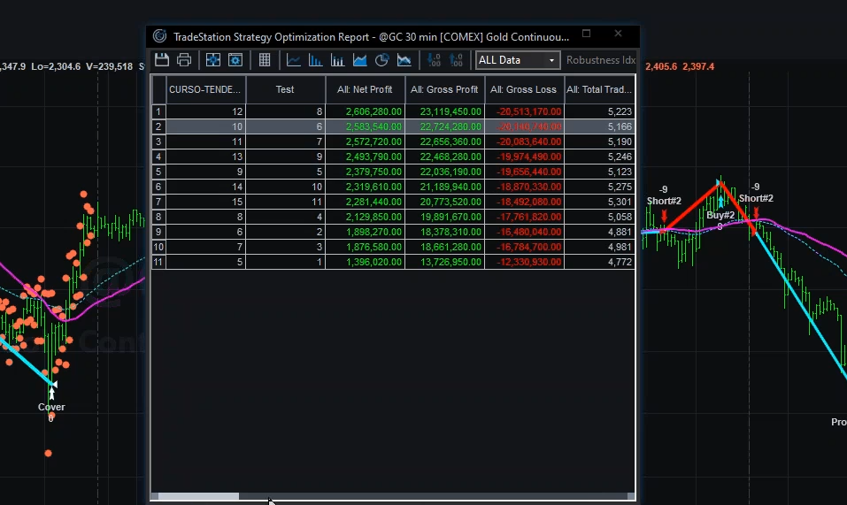
Figura 050
Con 10, que ya lo habíamos mirado pero tenía curiosidad porque no
había mirado más arriba. Con 10 queda un poco mejor. Era un poco mejor
que no usarlo.
Al final, por nosotros que os digo: simplemente cuando ya ha habido
mucha expansión, en un breakout o incluso tendencial,
cuando ya ha habido mucha expansión, suele venir bien filtrar para no
operar ya, ¿entendéis? Y lo contrario en el mean reversion. Eso
suelen ser filtros. ¿Temas cómo detectas? Es una manera fácil como os
digo. Es lo que ya una wide spread, que lo vimos en el
RV y creo que además os di algún PDF que lo explicaba, algún
PDF que explicaba qué era una vela tipo wide spread o una
narrow range.
buscador de
entradas con diversas estrategias
Vamos ahora con otro tema, vamos a trabajar un poquito con el código
que ya habéis visto a nivel de salidas, pero que ya os dije que lo
estábamos complementando con diversas entradas. Sobre todo pensando en
enseñar en un mean reversion, porque va bien aunque aquí no va
mal, como os dije, ya en tendencia el SP otro tipo de
estrategias. Pero bueno, sobre todo pensando en el concepto que la bolsa
suele ir muy bien de subirse a la tendencia, es decir, comprar a favor
de la tendencia principal pero tras una corrección. Este concepto suele
ir bastante bien en renta variable, ¿de acuerdo? Y hay bastantes maneras
de abordarlo.
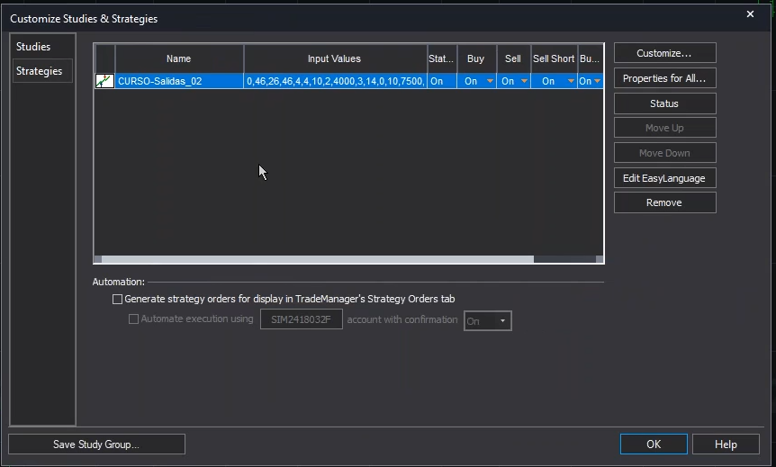
Figura 051
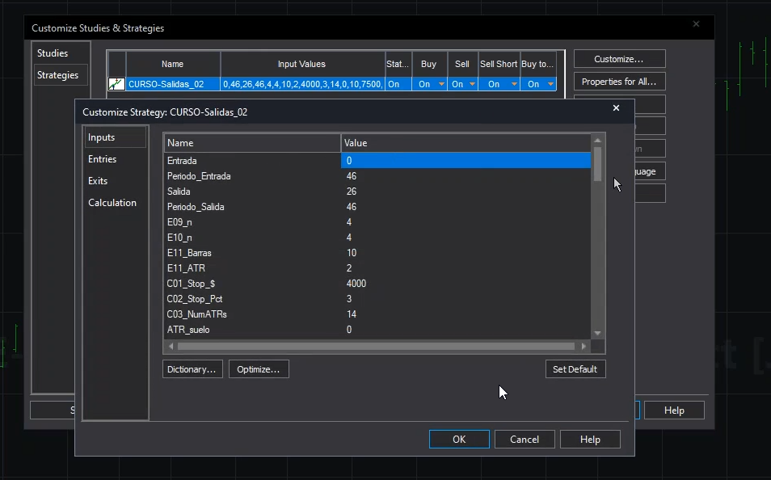
Figura 052
Entonces aquí, ¿qué hemos hecho? Tenemos el código que ya conocéis,
que ya hemos visto para las salidas, pero que ya os dije, os enseñé, que
le había puesto algunas entradas y que le íbamos a poner más.
inputs:Entrada(0),#elegir de 0 a 14Periodo_Entrada(46),Salida(26),#elegir de 0 a 33Periodo_Salida(46);vars:MP(0);MP = MarketPosition;switch(Entrada)Begincase 0: #No entries case 1: #Simple Momentum Entry case 2: #Breakout Next Bar Entry case 3: #Single Moving Average Cross Entry case 4: #Bollinger Band Entry case 5: #Volatility Entry case 6: #Bollinger trend case 7: #Donchian case 8: #Key Reversal case 9: #Entramos en un Pullback contra la tendencia primaria case 10: #Entramos en un Pullback a favor de la tendencia primaria case 11: #Breakout + momentum case 12: #RSI entrada saliendo de sobrecompra/sobreventa MR case 13: #RSI entrada en tendencia case 14: #RSI entrada saliendo de sobrecompra/sobreventa MREnd;
Entrada 0: sin hacer nada
Bueno, he puesto aunque es que si ya por este no hace nada, pero lo
he puesto para que quede claro, que quede claro que no hace nada,
¿vale?
Entrada 1: Momentum
Ya teníamos puesto una entrada de momentum, ¿de acuerdo? Un
momentum no es más que cierre mayor que cierre un período.
Tenemos un input ya puesto que es período de entrada, número de
entrada de período de entrada. Siempre se va a usar y ya lo hemos puesto
arriba, ¿vale? Si necesitamos más para cada uno de los case,
pues lo iremos incorporando, ¿vale?
case 1: # Simple Momentum Entry Begin If Close > Close[Periodo_Entrada] then Buy next bar at market; If Close < Close[Periodo_Entrada] then SellShort next bar at market; End;
Entrada 2: Breakout
Tenemos luego un breakout que entra en la siguiente barra.
Esto nuevamente hay varias maneras de abordarlo y hemos abordado varias
en el código. Pero una es que el high sea mayor que el mayor
high anterior. Por eso me refiero a la vela anterior, porque si
uso la vela actual, el high nunca va a superar el máximo del
actual, va a ser igual como mucho.
Esto hay gente que lo plantea así incorporándolo, entonces es mayor.
En el momento en que sea igual, mayor igual ya es lo bueno. Podemos
implementar así: high mayor que el mayor máximo que haya habido
en n entradas. Es un breakout, así como un Donchian,
¿de acuerdo? Pero hay varias maneras de abordarlo. Ya luego veréis que
he puesto otra.
case 2: # Breakout Next Bar Entry Begin If High > Highest(High, Periodo_Entrada)[1] then Buy next bar at market; # Buy next bar at HighestFC( High, Periodo_Entrada) + 1 point stop; If Low < Lowest(Low, Periodo_Entrada)[1] then SellShort next bar at market; end;
Entrada 3: Cruce de cierre con media móvil
Bueno, cruce de medias. Una entrada 3 que es una moving average
cross entry. Pues no, perdón, cruce de medias no, es cierre cruza
una media, ¿de acuerdo? En este caso hemos puesto una media
simple, la media simple que ya vimos que iba bien. Ya
vemos que no, estaba entre las buenas, entre una de las mejores y además
bastante muy robusta. Entonces por eso digo, cuando veáis que cambiar la
media es mejor, a poco, quedaros con la simple.
También el lado corto igual, están los dos lados de momento. Lo hemos
planteado simétrico. Para bolsa usualmente no lo hacemos simétrico, ya
veremos. Podríamos poner otro período, ya veremos, ya veremos cómo
abordamos esto. De momento hemos hecho el código general pensado espejo.
Pero si quieres ser separado se puede hacer.
case 3: # Single Moving Average Cross Entry Begin If Close crosses above Average(Close, Periodo_Entrada) then Buy next bar at market; If Close crosses below Average(Close, Periodo_Entrada) then SellShort next bar at market; end;
Entrada 4: Banda de Bollinger anti-tendencia
Qué más. Una entrada por banda de Bollinger, ¿vale? En este
caso, tipo Bollinger band, tipo aberración, ¿vale?
Tipo… entra en tendencia rotura, ¿de acuerdo? Que el cierre supera la
banda de Bollinger. A no, perdón, perdón, perdón, esta no es en
tendencia sino en anti-tendencia, ¿de acuerdo?
Porque lo que hago es que cruce la de abajo. Es menos 2, más 2.
Compro cuando el cierre cruza para arriba la de abajo, ¿vale? Es decir,
cuando el precio vuelve, ¿vale? El precio vuelve, ¿vale?
Compro. Voy a poner un comentario aquí: largos cuando recupera banda
inferior, ¿vale? Y cortos cuando recupera, pero cuando pierde, no. Banda
superior. Los comentarios siempre vienen bien.
case 4: # Bollinger Band Entry begin # largos cuando recupera banda inferior If Close crosses above BollingerBand(Close, Periodo_Entrada, -2) then Buy next bar at market; #cortos cuando pierde banda superior If Close crosses below BollingerBand(Close, Periodo_Entrada, +2) then SellShort next bar at market; end;
Entrada 5: Volatilidad con ATR
Esa sería otra entrada para entrar por volatilidad. Recuerdo
simplemente una volatilidad, una expansión de volatilidad, ¿vale? Le
pido que el cierre sea mayor que el cierre anterior más una cantidad de
ATR.
Esto normalmente se pone como hemos puesto fijo, pero lo voy a
cambiar, ya está, lo voy a cambiar. Porque lo normal es ponerlo como un
input. Input, ponemos bueno, le ponemos como hemos
hecho con todos, entrada más. Abajo lo veréis, ATR coef 5 n n y
ATR n. Por defecto vemos 1.5 y… hasta, ¿vale?
Este valor pues lo vamos a poner aquí. En este tipo de, en este caso
estos casos, si va a ser para bolsa, lo usual es separarlo para largos y
cortos. ¿Cómo separarlo para largos y cortos? Siempre que nos lo permita
el número de trades. Pero lo dejamos de momento, de momento
así. Venga.
case 5: #Volatility Entry begin input: E05_n (1.5); If Close > Close[1] + AvgTrueRange(Periodo_Entrada) * E05_n then Buy next bar at market; If Close < Close[1] - AvgTrueRange(Periodo_Entrada) * E05_n then SellShort next bar at market; end;
Entrada 6: Bollinger en tendencia
Qué más, Bollinger trend, es este, es en Bollinger
pero ese sí que es el Bollinger en tendencia. Aquí sí que
entramos largos y cruzamos arriba a banda de Bollinger. Es un
poco el que vimos, aberration. Bueno, vimos un poco los
dos.
case 6: # Bollinger trend Begin If Close crosses above BollingerBand(Close, Periodo_Entrada, 2) then Buy next bar at market; If Close crosses below BollingerBand(Close, Periodo_Entrada, -2) then SellShort next bar at market; End;
Entrada 7: Donchian con ventana temporal
E indamos 7 y mira, aquí pues, pensando en el intradía, hemos
incorporado una, un tiempo que podía haberse hecho con inputs,
¿vale? Para poner un tiempo, una ventana de entrada, ¿vale? Por
incorporar algo distinto. Ya que fijaros que directamente compra en el
máximo de los períodos que le pongamos, en stop, todo el rato, tira la
orden en el canal. Simplemente, si es la hora, le tira la orden en el
canal. Es otra manera de abordar el Donchian.
case 7: # Donchian Begin If Time >= 0000 and Time <= 2359 Then Begin Buy next bar at Highest(High, Periodo_Entrada) stop; Sellshort next bar at Lowest(Low, Periodo_Entrada) stop; End; End;
Entrada 8: Key Reversal
case 8: # Key Reversal Begin If Low < Lowest(Low, 3)[1] and Close > Close[1] then Buy ("KeyRevLE") next bar at market; If High > Highest(High, 3)[1] and Close < Close[1] then Sell Short ("KeyRevSE") next bar at market; End;
Un case reversal, entrada bastante sencilla y que muchas
veces da entradas malas, incluso salidas, incluso salidas. De hecho,
casi os diría que da mejores salidas que entradas. Eso está de hecho
implementado en TradeStation como entrada y creo que también
como salida.
Al final es que el mínimo sea menor que el mínimo de n velas. Esto
normalmente es 3. En este caso lo voy a dejar fijo, en este caso lo voy
a dejar fijo porque si no es muy extremo. Que sea el mínimo de n barras
anteriores y el cierre mayor. Por eso es una vuelta. Eso para comprar. Y
para vender, para el corto, lo contrario, ¿vale?
Si es otro tipo, otra entrada típica que es eso que en diario se
llama una vuelta en un día. Pero bueno, al final le pedimos que el
mínimo sea menor que de tres días para que realmente esté cayendo y se
ve la vuelta, ¿de acuerdo? Es una entrada muy anticipada, muy anticipada
con poca probabilidad de éxito lógicamente, porque al final te anticipas
mucho.
Entrada 9: Pullback contra tendencia primaria
case 9: # Entramos en un Pullback contra la tendencia primaria Begin Input: E09_n ( 3 ); # multiplicador para el periodo de largo plazo If Close > Close[Periodo_Entrada] and Close < Close[Periodo_Entrada * E09_n] then Buy next bar at market; If Close < Close[Periodo_Entrada] and Close > Close[Periodo_Entrada * E09_n] then Sellshort next bar at market; End;
Aquí otra, ya poco, vamos ya complicando un poco más, ¿no? Ya por eso
habíamos metido inputs. Entramos en un pullback contra
la tendencia primaria. Aquí es cierre mayor que el cierre del período de
entrada pero cierre menor que un período mayor que está
multiplicado.
Es decir, aquí estamos entrando cuando el precio se ha dado la vuelta
pero está cayendo. ¿Se entiende? Porque estamos pidiendo que el cierre
sea menor, sería un poco mejor. Ahora no, un poco ahora no. Cierre menor
que un cierre muy lejano pero el de ayer mayor. ¿De acuerdo? Es decir,
pullback.
Entraría ahora, después de una caída a la que ya empieza a subir,
compro. Ese sería un poco este concepto, para que entendáis un poco la
idea, ¿no? Un pullback contra la tendencia primaria. Esto
normalmente es tipo mean reversion. Decir, aquí sería para
incluso, esto se puede usar como complementado con un key
reversal.
key reversal hace un poco eso, pero es muy rápido, al final,
se puede añadir este como que el cierre sea mayor que el período de
entrada, el pedido de entrada mejor, pues un poco menos restrictivo.
Aquí es 1, que es 1.
Fijaros, este sería esta parte. No solo es la anterior, y cierre
menor que un período lejano. Es un poco parecido al key
reversal.
Entrada 10: Pullback a favor de tendencia
primaria
case 10: # Entramos en un Pullback a favor de la tendencia primaria Begin If Close < Close[Periodo_Entrada] and Close > Close[Periodo_Entrada * E09_n] then Buy next bar at market; If Close > Close[Periodo_Entrada] and Close < Close[Periodo_Entrada * E09_n] then Sellshort next bar at market; End;
Aquí otra, que se entramos en un pullback a favor de la
tendencia primaria, que a los que es al revés del anterior, al
revés.
Aquí sí que el período largo, en el período largo está subiendo pero
en el corto cae. Es decir, aquí podría ser que un poco sería entrar
aquí. Es decir, yo el cierre de hoy, el de 20 es mayor, imaginaos, este
cierre con este, pues es mayor. Pero el de corto es menor. A lo mejor se
va a entrar pues en pequeñas correcciones, ¿no?
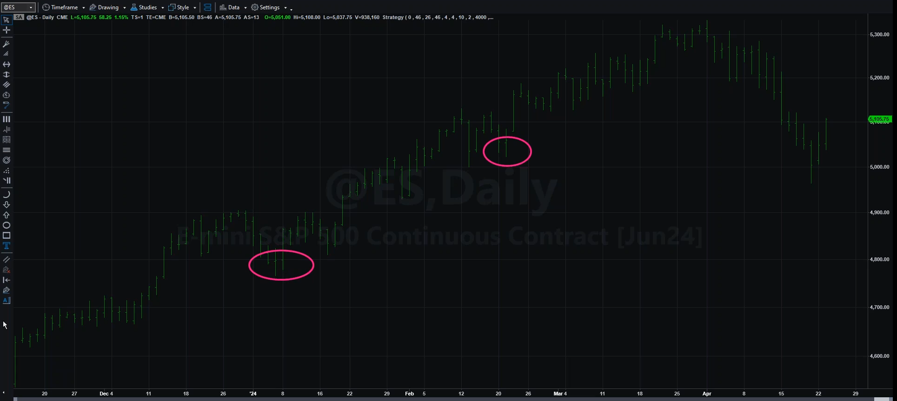
Figura 053
Ya ser entrar o no, que estoy preparado. A lo mejor se va a entrar
pues aquí, tenéis un poco de las pequeñas correcciones. Es decir, a
corto baja pero viene subiendo de largo, viene subiendo de largo, de
algo viene subiendo. Entonces yo entro dentro a corto pero a lo largo
viene subiendo. Sería un poco este tipo de entrada.
Entrada 10-11: Breakout más Momentum
case 11: # Breakout + momentum Begin Input: E11_Barras( 10 ), E11_ATR( 2 ); var: canal(0); canal =(highest(high, E11_Barras) + lowest(low, E11_Barras)) / 2; If close > close[Periodo_Entrada] then buy next bar at canal + E11_ATR * AvgTrueRange(Periodo_Entrada) stop; If close < close[Periodo_Entrada] then sellshort next bar at canal - E11_ATR * AvgTrueRange(Periodo_Entrada) stop; End;
Breakout más momentum. Bueno, aquí ya hemos
incorporado un poco canal, canal, ¿vale? Pero además también le pido que
el cierre sea mayor que el cierre. Es decir, le pido un
momentum, le pido que esté subiendo, ¿vale? Le pido que esté
subiendo respecto a un período n pero le meto volatilidad.
Al final es un, bueno, es un poco como lo que os decía del de medias
con Donchian, pues aquí es momentum más
Donchian. Aquello que os decía es entrar en cruce de medias más
Donchian, ¿vale? Activarlo, os decía, en el otro sistema.
Aquí hablamos de entrar en momentum más breakout…,
pedirle que haya: yo te pido que el cierre sea mayor que la barra
anterior, pero además que supere su nivel de 10 barras anteriores.
Pues entonces, hasta que no supere este no me vale, solo que suba
esta. Sino que además supere un máximo, ¿por qué? Porque si no, lo mejor
tengo pequeñas superaciones, por ejemplo. Imaginaros, pero alguna que no
funciona, bueno es que ahora todas las que veo aquí funciona, pero es
que en equity pasa.
En equity, bueno, imaginaros que el cierre mayor que cierre
dos o tres días. En esta vela, no, esta vela tiene el cierre mayor que
las dos anteriores aunque por poco. Pero en cambio no supera ningún
nivel, no supera esto de aquí, ¿entendéis? Pues yo puedo decir que el
cierre sea mayor que tres velas, pero además que rompa el máximo de 10.
En eso sería un poco breakout más momentum. Un poco de
ejemplo es amplificado.
Figura 054
Entrada 12-14: RSI de tres maneras distintas
RSI Entrada 12: Cruce arriba de banda inferior
case 12: # RSI entrada saliendo de sobrecompra/sobreventa MR Begin input: minRSI(30), maxRSI(70); var: RSI_value (0), Cond_Long(false), Cond_Short(false); RSI_value = RSI(Close, Periodo_Entrada); Cond_Long = RSI_value crosses over minRSI; # largos en cruce arriba de banda inferior Cond_Short = RSI_value crosses under maxRSI; # cortos en cruve abajo de banda superior If MarketPosition <> 1 and Cond_Long then Buy next bar at market; If MarketPosition <> -1 and Cond_Short then Sell short next bar at market; End;
Pero vamos a hacer primero el más obvio, ¿vale? El más obvio, el más
típico de RSI, que es el RSI que entra. Vamos a
meterlo en el gráfico, que eso siempre viene bien para entender. Me da
igual ahora el input, me da igual un poco. Yo tengo ahí un
RSI.
Entonces, yo lo que voy a hacer ahora es en RSI, y cuando
hace esto que he hecho aquí es que ahí lo marca azul porque está
configurado así por defecto. Porque se ha salido, aunque se ha salido
por poco. Ha estado por debajo de 30, 29.51, y luego recupera. Es decir,
cruza arriba la banda inferior. eso es compra.
Figura 055
Cruza arriba la banda inferior. RSI value crosses over min
RSI. Largos en cruce arriba de banda inferior, ¿vale?
Y el con short es al revés. Cuando el valor del RSI
y cruza abajo la banda inferior. Es decir, cortos en cruce abajo de
banda superior, , decir cortos aquí cuando se sale esta vela.
Figura 056
RSI Entrada 13: Cruce arriba de banda superior
(tendencia)
case 13: # RSI entrada en tendencia Begin RSI_value = RSI(Close, Periodo_Entrada); Cond_Long = RSI_value crosses over maxRSI; # largos en cruce arriba de banda superior Cond_Short = RSI_value crosses under minRSI; # cortos en cruce abajo de banda inferior If MarketPosition <> 1 and Cond_Long then Buy next bar at market; If MarketPosition <> -1 and Cond_Short then Sell short next bar at market; End;
vamos a hacer esta muy parecida. Vamos a poner la 13. No vamos a
modificar los inputs porque al final vamos a mantener el mismo,
pero aquí lo que vamos a hacer es en vez de entrar en cruce por encima
de la banda de la banda de abajo, vamos a entrar en cruce por encima de
la banda de arriba.
Esto es bastante aparentemente extraño. Es un poquito como
aberration, ¿no? En tendencia, ¿vale? Es decir, largos en cruce
arriba de banda superior. Esto, aunque os pueda sorprender, para
breakouts va bastante bien en general, ¿vale? Porque cuando hay
tendencia, ¿de acuerdo?
Entra a favor de la tendencia principal cuando el RSI rompe por
encima de su banda superior.
Entra en cortos cuando el RSI rompe por debajo de su banda inferior,
solo si hay tendencia bajista.
Si hay tendencia y el RSI rompe la banda extrema, entro a favor de
esa ruptura al mercado en la siguiente barra.
Condiciones exactas
Largos * ✔ RSI cruza por encima de maxRSI * ✔ El precio está por
encima de la media 200 (tendencia alcista) * ➡ Buy next bar at
market
Cortos
* ✔ RSI cruza por debajo de minRSI * ✔ El precio está por debajo de la
media 200 (tendencia bajista) * ➡ Sell short next bar at market
Es decir, en el momento en que cruzo aquí, meto largos.
Figura 057
Lo hay que ver dónde me salgo. Pero normalmente es bueno por el
pillar movimientos buenos. Por decir, cuando una tendencia es fuerte, se
sale mucho, que permanece mucho. Sobre todo en el lado largo.
Aquí hubiera sido, si lo aplicamos al corto, corto aquí. al día
siguiente la apertura, el día siguiente.
Figura 058
Igualmente esto se puede trabajar y mejorar de varias maneras. En un
sistema, en el Mastering que contaba, ¿te acuerdas, Alberto?
Las veces, las barras que hacía que lo habías hecho, etcétera, ¿no?
Es decir, aquí en el lado corto es más complicado, lógicamente. Solo
suele ir mejor en el largo. Pero esa es la idea, ¿de acuerdo? Es aquí la
primera vez que entra, te pones corto.
Figura 062
📊 Filtro de tendencia recomendado Este tipo de
entradas normalmente conviene tener un filtro de momentum. Es
decir: hago esto pero solo si, imaginaros, por encima de la media 200
largo, por debajo de la media 200 corto. Así evitamos señales
contradictorias con la tendencia principal.
Normalmente, lo normal es tener un filtro también de
momentum. Es decir, hago esto pero solo si, imaginaros, por
encima de la media 200 largo, por debajo de la media 200 corto. Es
decir, aquí por ejemplo,
Figura 063
este no le haría caso, no le haría caso porque estoy alcista (la
media 200 largo). Entonces al estar alcista solo quiero comprar, pero no
me pondría corto al salir, pero si estoy por debajo de la media si
compro.
Figura 064
Esas es un poco, en ambos casos se puede usar en ambos casos.
Figura 061
Entonces claro, esto luego va la salida va
acorde, claro. Un sistema que hace eso, este caso que
hemos dicho, probablemente es un breakout o un sistema que
tiene que tener un TP, etcétera, ¿de acuerdo? Porque al final
trata de buscar un movimiento un poco contra, a favor de tendencia pero
con este que está iniciada.
Entonces como digo, la salida al final depende mucho de la entrada.
Es decir, seguramente la salida que te saldrá mejor en el
case 12 no será la que te saldrá mejor en el que es
13, ¿entendéis? Porque al final tienen componentes muy
distintos. Este entro en corrección y este entro en rotura, para
entendernos. Es decir, es muy distinto.
Pero yo digo siempre hay que explorar distintos usos de las
tendencias principales.
Ya digo, no es mala práctica distintos, pero en este caso que es el
mismo indicador, pues todo igual. Pues simplemente que cambia la regla,
pues lo dejo. Entonces largos en cruce arriba, ¿vale? Y en cruce abajo,
¿vale? Ese sería otro posible, otra posible entrada en el
RSI.
RSI Entrada 14: Anticipación (cruce abajo de banda
inferior)
case 14: # RSI entrada saliendo de sobrecompra/sobreventa MR Begin RSI_value = RSI(Close, Periodo_Entrada); Cond_Long = RSI_value crosses under minRSI; # largos en cruce abajo de banda inferior Cond_Short = RSI_value crosses over maxRSI; # cortos en cruce arriba de banda superior If MarketPosition <> 1 and Cond_Long then Buy next bar at market; If MarketPosition <> -1 and Cond_Short then Sell short next bar at market; End;
La lógica de esta entrada con RSI 14 consiste en
anticipar el rebote propio de un entorno tendencial, en
lugar de esperar a que el indicador salga completamente de la zona
extrema. En vez de utilizar la señal clásica de “salir de sobreventa
para comprar”, aquí se hace lo contrario: se abre la
operación justo cuando el RSI cruza hacia abajo la banda inferior (para
largos) o hacia arriba la banda superior (para cortos). Es
decir, se toma la entrada en el momento de “exceso” y no en la
confirmación posterior.
Esto tiene sentido en mercados en tendencia porque, en la práctica,
esperar a que el RSI vuelva a entrar dentro de sus bandas suele retrasar
demasiado la entrada: el precio ya ha rebotado, o incluso ha continuado
la tendencia sin dar oportunidad de incorporarse. Por eso esta variante
funciona como entrada anticipada dentro de una estructura
direccional.
En condiciones normales de tendencia, el mercado apenas permanece
tiempo en sobrecompra o sobreventa: suele tocar la banda y reaccionar
rápido. Por eso, aunque la entrada se realiza al cruzar hacia abajo la
banda inferior, pocas velas después el RSI ya ha vuelto al rango y el
sistema habría acabado comprando igualmente. Anticipar simplemente evita
quedarse fuera del movimiento.
El punto débil aparece durante caídas violentas o rupturas impulsivas
contra la tendencia principal. En esos casos, el RSI puede perforar la
banda y seguir deslizándose sin revertir, lo que provoca que la entrada
anticipada se quede atrapada y el sistema “se coma” toda la extensión
del movimiento. Es el riesgo inherente a cualquier aproximación
mean–reversion aplicada fuera de contexto: cuando la presión es
muy fuerte, no hay rebote inmediato y la operación entra demasiado
pronto.
por ejemplo aquí:
Figura 066
En resumen: este modo de entrada con RSI 14 busca capturar el rebote
típico de fases tendenciales entrando un paso antes del setup
tradicional. Funciona bien cuando el mercado respeta la estructura
direccional y reacciona rápidamente en las zonas extremas, pero puede
generar pérdidas rápidas en episodios de fuerte momentum en contra. Por
eso suele complementarse con filtros o salidas adicionales en los casos
en que el impulso invalida la lógica mean–reversion.
Analisis de las entradas en
SP500
Bueno, aquí para probar simplemente podemos dejarlo simétrico de
momento, ¿vale? Dejarlo simétrico de momento. Y bueno, podemos probar,
podemos cargar aquí. De momento vamos a cargar en horario regular,
estamos en diario, pues le vamos a meter 20 años. Y vamos a ver, ya lo
teníamos, ya lo teníamos.
Ponemos 1 a 14, ¿vale?
Figura 067
Y de período, no sé, vamos a poner 14. Abierto, por poner que suelen
llevar los indicadores, aunque quizá podíamos dejarle optimizar un poco,
que va a ir muy rápido. Más que nada porque hay algunos cierres de
momentum que es un poco mucho.
Figura 071
Vamos a poner de 3 a 21 pero que no va a tardar mucho esto así.
Figura 070
Figura 069
Resultados de la optimización de entradas
Figura 072
Figura 073
click a la 4
case 4: # Bollinger Band Entry begin If Close crosses above BollingerBand(Close, Periodo_Entrada, -2) then # largos cuando recupera banda inferior Buy next bar at market; If Close crosses below BollingerBand(Close, Periodo_Entrada, +2) then # cortos cuando pierde banda superior SellShort next bar at market; end;
Bueno, aquí tenemos algunas.
Vemos que la 4 es Bollinger entry, entrando en
anti-tendencia. Lógicamente el lado largo era muy bien. Y la 14
que es el RSI de entrada abajo, no efectivamente. Las dos muy
parecidas, las muy parecidas.
Figura 074
Figura 075
Pues van, van bien. Que es, como os digo, de entrada pues las
mean reversion suelen ir bien.
Realmente esto es muy sencillo, se tiene que mejorar, pero es
simplemente para que veáis maneras de entrar. Pasa que es en diario, es
en diario. Y pues fácilmente en diario en el SP consigues cosas
que están muy bien, porque sube mucho. Entonces al final aunque bueno,
ganas en el corto, ganas en el corto.
pero este es un poco planteamiento de buscar ideas cuando no sabéis
por dónde tirar, que recuerdo que hablamos de libros, de distintas
fuentes, de distintas fuentes. Ahora, antes de acabar, enseñaremos algo
de este estilo
click encime de short
Figura 077
Figura 078
Figura 079
¿qué período ha cogido, por cierto? También ha cogido 10, cogido 10,
no está mal. Y bueno, pues salida, pues ya que ha cogido 10, bueno, le
voy a dejar fijo.
Bueno, aquí claro, aquí el tema ahora es las salidas. Seguramente
están adaptadas un poco al otro. No, solamente están un poco adaptadas
al otro. Entonces hay que ver, no tendrán mucho sentido en ese
frame, pero bueno, mira, vamos a hacer otra cosa por complicar
un poco más, aplicar un poco más el tema. Poner en 60 minutos. Lo vamos
a poner en el continuo, sea en todo el rato, ¿vale? Es en 60 minutos,
vamos a poner los cinco años. A recordar que no teníamos comisiones.
Figura 080
Aunque el diario no es tan crítico, pero recordar que no teníamos
comisiones.
Ahora ya va a empezar a ser lo más crítico. Entonces vamos a ponerle
comisiones, 3 y 12, 200 mil dólares. no activamos el LIFO que
nos va a hacer ir más lentos y ahora mismo no hace falta.
Figura 081
ahí mientras me va, me va bajando el histórico, el histórico.
Figura 082
Figura 083
Figura 084
Aquí ya pues, ya la cosa cambia, también. O sea, ya no va nada bien.
Pero esto es bastante raro, no es tan difícil encontrar estrategias
robustas y que funcionen bien sin complicarnos mucho la vida. Pasa y
claro, ahí no abusar de optimización, porque al final tenemos menos
trades, etcétera, ¿no? Pero realmente no es tan difícil, sobre
todo en el lado largo.
Pero incluso aquí, probablemente ahora cuando acabe de cargar el
histórico, volvemos a pasar brevemente el motor de las entradas pero
simplemente dejando por defecto el período en 14, 15. Bueno, vamos a
poner que tenemos 20, 20. Vamos a poner las velas de una sesión, que es
una manía que tenemos. Eso deben ser 23 velas, ¿no Alberto? 23 velas,
¿no? Un día del SP. Afirmativo. ¿Y tres barras, verdad? No
falla. Pues le vamos a poner 23.
Figura 085
Entonces vamos a hacer eso, le ponemos, hemos hecho 23. Y aquí pues
otra vez de 1 a 14 a ver, con 23 en principio. Vamos a poner una salida,
bueno, luego lo miramos, 3 por 3, con 70 ya le da,,, si lo he calculado
bien.
Figura 086
Figura 081
Y vamos a romper. ¿Que es realmente curioso lo que está pasando
ahora? Sí, es curioso que no enseña a ninguno, no entiendo.
Resultados en 60 minutos
Figura 088
Figura 089
Bueno, aquí pocos ya aguantan el tipo. Lo sé que tenemos que el 14
puede aguantarlo muy justito todo, el 5. ¿Cuál era 14? El
ADX.
click al 14
case 14: # RSI entrada saliendo de sobrecompra/sobreventa MR Begin RSI_value = RSI(Close, Periodo_Entrada); Cond_Long = RSI_value crosses under minRSI; # largos en cruce abajo de banda inferior Cond_Short = RSI_value crosses over maxRSI; # cortos en cruce arriba de banda superior If MarketPosition <> 1 and Cond_Long then Buy next bar at market; If MarketPosition <> -1 and Cond_Short then Sell short next bar at market; End;
click al 5
Y el 5 era por volatility,
case 5: # Volatility Entry begin input: E05_n (1.5); If Close > Close[1] + AvgTrueRange(Periodo_Entrada) * E05_n then Buy next bar at market; If Close < Close[1] - AvgTrueRange(Periodo_Entrada) * E05_n then SellShort next bar at market; end;
también le podíamos dar una vuelta ese 1 y medio, a ver. Porque
realmente con ese 1 y medio no creo yo que sea lo más óptimo.
Estamos siempre simplemente haciendo prospección, nada más.
Figura 090
Figura 091
Figura 092
Figura 093
Esto está medio roto todo ayer. A no, vale, porque se queda corto de
prospección de nada más. Tenemos muy pocos trades, de hecho
ahí, pero menos, pero menos.
Habría que habría que ver, seguramente ahora deberíamos de abrir un
poquito más. Pero es igual, simplemente ahora quiero enseñaros otra cosa
antes de acabar: que las expansiones de volatilidad también
son entrada muy buena.
Entradas por expansión de volatilidad
Y de hecho esta acompañada… este case 5 es cierre un
ATR. Pues si esto además lo que os decía, le añadís un filtro
de tendencia o algo así, es súper, súper buena entrada por las de
volatilidad. En general, la mayoría activos, pero particular en
bolsa.
💡 Entradas por volatilidad recomendadas
Simplemente añade una regla que le incorpore un momentum
tendencia, y que solo vaya a favor de ella. Son muy buenas entradas. Por
ejemplo: cierre mayor que cierre anterior más una cantidad de
ATR, combinado con un filtro de dirección.
Simplemente añadís es una regla que le incorpore un momentum
tendencia, ¿no? Y que solo vaya a favor de ella y muy buenas
entradas.
Prueba con salida porcentual
Pero bueno, para empezar a definir niveles, vamos a poner la salida
que era solo porcentual. Salida porcentual que era el case 16.
case 16: # Stop% + Profit% - Input: C16_Stop_Pct(2), C16_Profit_NxStopPct(1); begin Input: C16_Stop_Pct ( 2.25 ), # en tanto por 100 C16_Profit_NxStopPct ( 0.7 ); SetStopShare; If MP <> 0 then begin SetStopLoss (EntryPrice * C16_Stop_Pct / 100 * Bigpointvalue); SetProfitTarget (EntryPrice * (C16_Stop_Pct * C16_Profit_NxStopPct) / 100 * BigPointValue); end else begin SetStopLoss (Close * C16_Stop_Pct / 100 * Bigpointvalue); SetProfitTarget (Close * (C16_Stop_Pct * C16_Profit_NxStopPct) / 100 * BigPointValue); end; end;
Figura 094
Figura 098
Figura 099
Figura 100
A ver si esto tiene algún tipo de sentido, o es poco mucho.
Figura 101
Figura 102
Figura 103
Figura 104
Figura 105
Digo que ahora seguramente a la que lo pongamos más histórico, se va,
se va, se va a deteriorar. Decir, que lo decís vosotros antes que los
que están en el despacho. O, tiene gracias, gracias, gracias. Digo,
claro es que lo despacho me oye, ese es el problema.
eso es solo un ejercicio de investigación, por lo que no os quedéis
tampoco con los resultados que ahora parece que sean decentes. Buenos,
no importa. Ahora seguramente al cargar más años se va a deteriorar, ¿de
acuerdo? Desde está bastante probablemente está
sobreoptimizado, pero repito que es un
ejercicio de investigación para ir buscando, enseñaros lo que os digo de
los buscadores de ideas a través de código.
Y podéis ir trabajando distintos activos y distintos times
frames, ¿vale? Tener distintos códigos. Incluso podéis hacer uno
más pensado para investigar mean reversion, solo mean
reversion, otro para más tendenciales, ¿vale? Otro de
filtros, ¿de acuerdo? Es decir, ir trabajando bloques para investigar,
para investigar.
Figura 106
Figura 107
Eso que os decía, esto normal es que se rompiera por el lado, ¿vale?
Es un ejemplo muy bueno lo que cuando hablamos de que
sobreoptimizar y qué es esto.
Simplemente, repito, que estamos simplemente investigando y viendo
códigos en el tipo de mercado que hay en cada momento. Por eso hay que
mirar antes las bases de datos que ajusta, que no es aquí, por
ejemplo.
Figura 108
Es el problema de los stop sin TP, ¿no? Es bastante
problemático como veis, bastante poco eficiente la salida así a bruto,
realmente es una salida para empezar a trabajar base, pero normalmente
no suele ser la mejor. Si no haces TP, te quedas muy, muy
enganchado.
De hecho, ahora si dejamos el stop y variamos el TP
solo, veréis cómo nos intenta hacer TP mucho antes para evitar
ese problema. Con lo cual se hace más mean reversion, porque
ahora de esta manera se ha quedado relativamente tendencial,
relativamente no, se ha quedado muy tendencial
(Percent profitable 37.66%). Porque la variable del
TP** ha salido multiplicando por mucho.
Figura 109
Esto es el problema, sobre todo para el lado corto, pero todo para el
lado corto, aunque datos bastante similares, ¿vale?
Sistema
Tomorrow’s Trend: patrón de corrección a favor de tendencia
Entonces lo que os quería enseñar es en la base del Tomorrow
que visteis. Os comenté de la revista de la revista.
# TradeStation Labs# Strategy courtesy of Joe Krutsinger# April, 2016# TSLabs@TradeStation.com# { A pattern of a Short Term Reversal against the minor trend# with a breakout in the direction of the major trend,# all coupled with a walk away.}Input: BuyBO(6), SellBO(27), Walk(50), Trend(10), PositionBasis(false), Amount(1330);If Close <= Close[2] and Close > Average(Close, Trend)[1] thenBuy("JKtt LE")next bar at Open of next bar + (Range* 0.10 * BuyBO)Stop;If MarketPosition = 1 and BarsSinceEntry >= Walk thenSell("w LX")next bar at Market;If Close > Close[2] and Close < Average(Close, Trend)[1] thenSell Short ("JKtt SE")next bar at Open of next bar -(Range* 0.10 * SellBO)Stop;If MarketPosition = -1 and BarsSinceEntry >= Walk thenBuy to Cover ("w SX")next bar at Market;If PositionBasis thenSetStopPositionelseSetStopShare;SetStopLoss(Amount);# Copyright (c) 2016 TradeStation Technologies, Inc. All rights reserved.
Este código, recordar que es lo que os dije que era uno de los que
iba mejor en mí, en fuera de muestra.
Y esta regla misma la hemos puesto antes, era una de las que está
metida. Es una regla como muy sencilla y sigue un poco en la línea de lo
que os decía: una corrección de corto plazo a favor de la tendencia. Es
decir, es incorporarte a esa. Hay muchas maneras de añadirlo y de
controlarlo.
💡 Patrón Tomorrow’s Trend Simplemente añade rotura
de volatilidad para entrar, exige que el precio se mueva a favor. Es
tremendamente efectivo. Es el mismo concepto que usa el sistema
Artemisa: un indicador de momentum y una media para
incorporarse a favor.
Simplemente añade rotura de volatilidad para entrar, exige que el
precio se mueva a favor. Es tremendamente efectivo.
Y simplemente a esto LE vamos a eliminar las salidas.
Adaptación del sistema con módulo de salidas
propio
Figura 111
Y a ver, por no complicarnos, por no complicarnos, simplemente vamos
a hacer eso. Manera muy sencilla de hacerlo, muy sencilla de hacerlo que
ya os enseñé, es a esto le pones un valor astronómico, lo cual no puede
saltar, puede saltar, es imposible que salte, nunca salta, ¿vale?
Figura 112
Figura 113
Figura 114
Añadimos nuestro módulo de salidas dejando las entradas en cero, que
ya lo están por defecto.
Figura 115
Figura 116
Figura 117
Que estamos en 60, es decir, podemos estar en esas 23, 23 barras
(PERIODO SALIDAS). Y aquí podemos pues trabajar un poco con las
salidas.
Es verdad que, tal como estamos ahora, cuántas salidas tengo, pues no
sé si los inputs están bien o no. Pero vamos a tener una pasada
rápida de momento, momento. Salidas, estamos en 32. PoNer de 1 a 32,
porque alguna tienes que elegir,
Figura 118
y vamos con ello, vamos con ello.
Figura 119
De momento no sé ni cuánto tengo cargado aquí, honestamente os lo
digo. Y hacer un sistema que en fuera hemos aguantado muy bien. Un
sistema que es lo que esta pauta en nuestro sistema
Artemisa explota exactamente esta pauta. Es la
misma prácticamente, no está hecho igual pero usa lo mismo, ¿vale?
El indicador Momentum
Al final usa un indicador de momentum y una media para
incorporarse a favor. Y ya está. Que és lo que hace este
momentum. Para el que no esté familiarizado, esto
Close <= Close[2 es el indicador de momentum,
eso es el momentum de 2.
El indicador de momentum, si lo abrís, es esto: es cierre
menos cierre anterior. Es la comparación del cierre con el cierre de n
velas.
Entonces aquí lo que pide es que el momentum sea negativo,
el momentum de 2 sea negativo o igual, pero menor o igual que
cero. Y que el cierre sea mayor que una media que fija en 10,
¿entienden?
Esto puede hacerse de más períodos, de menos, se puede poner un
input, ¿de acuerdo? Es decir, se puede buscar un poco grados de
tendencia, porque es verdad que eso entra muy rápido, entra muy
rápido.
Aquí ahora el problema que tenemos seguramente es que no estamos bien
dimensionados de los inputs, ¿vale? Porque estábamos antes, se
quedaron en el oro, 30. Que estamos ahora en 60. Bueno, como hay más
volatilidad, puede ser que sea algo medianamente razonable, pero seguro
que no es lo que hay que trabajar, lo más, y que adaptarlos.
Figura 120
Figura 121
Pero si vemos un poco cuál ha quedado mejor, qué valores tiene, y con
ese poco podemos extrapolar. Bueno, vemos que por aquí por esto, se ha
elegido este 41, que era el número 26. 26 que era
profit y break even. Al en porcentaje.
case 26: # Profit% + BreakEven% - Input: C26_Profit_Pct(2), C26_BreakEven_Pct(0.5); begin Input: C26_Profit_Pct ( 2.2 ), C26_BreakEven_Pct ( 1.6 ); # en tanto por 100 SetStopShare; If MP <> 0 then Begin SetProfitTarget (EntryPrice * C26_Profit_Pct / 100 * BigPointValue); SetBreakeven(EntryPrice * C26_BreakEven_Pct / 100 * Bigpointvalue); end else Begin SetProfitTarget (Close * C26_Profit_Pct / 100 * BigPointValue); SetBreakeven(Close * C26_BreakEven_Pct / 100 * Bigpointvalue); End; end;
Cambio a stop ATR respetando la idea original
Bueno, de hecho, mira, vamos a hacer, él tenía un esto monetario,
vamos a pasar, vamos a pasar el esto porcentual más que es respetar
totalmente su idea pero adaptándolo a lo que creemos que es más
razonable por el tiempo que ha pasado. Y así le utilizamos un poco ese
stop pasamos stop para ATR, esto para ATR, esto para
ATR, es el número 3. Es el número 3.
case 3: //Stop ATR - Input: C03_NumATRs (3), Periodo_Entrada(14), ATR_suelo ( 0 ), ATR_techo ( 10 ); begin Input: C03_NumATRs ( 14 ), ATR_suelo ( 0 ), //límite inferior del stop ATR en tanto por 100 ATR_techo ( 10 ); //límite superior del stop ATR en tanto por 100 Value1 = C03_NumATRs * AvgTrueRange(Periodo_Salida) * BigPointValue; Value2 = ATR_suelo / 100 * C * Bigpointvalue; Value3 = ATR_techo / 100 * C * Bigpointvalue; Value1 = MaxList(Value1, Value2); Value1 = MinList(Value1, Value3); SetStopContract; SetStopLoss(Value1); end;
Antes déjame mirar cuánto histórico hay aquí cargado. Tenemos muy
poco histórico.
Figura 122
Esto hay que cargar más, esto que cargar más, esto que cargar más.
Hay que meterle al menos cinco años, y le voy a meter 10. A ver, le voy
a meter 10, me va a tardar un poco claro, un poco, pero me voy a
esperar.
Figura 123
Y ha puesto, se voy a pedir al max bar el, bueno, no lo
ajustaré mucho y así no me hace falta.
Y esto, pensar que en mi opinión 2 es muy justo, pero bueno, lo
definió así, lo hemos respetado. En mi opinión, cierre al
momentum de 2 pide como muy poca caída, pero es verdad que la
línea del tampoco están tan estricta. Pero sí que me parece un poquito
rápido, no, me parece un poquito rápido. Se incorpora, veis, aquí muy
rápidamente quiere comprar.
Figura 124
Esto ya está cargado, tenemos más histórico. Tenemos mil operaciones.
Entiendo que debemos tener comisiones… si… $7, Ya teníamos el
LIFO activado y todo, ya teníamos activado.
Figura 126
Pues vamos a meterle simplemente el esto para respetar su idea de
momento. Simplemente él tiene un esto monetario, no me gusta, no nos
gusta. Por lo tanto, vamos a respetando su criterio y hacemos un esto
bater, que es adaptarlo. Ya no me acuerdo con lo dicho que era,
que lo que era el 5. El 3, perdón, era el 3.
Figura 128
Figura 127
Y c 3, solo tengo el número de ATRs en intradía,
pues no tengo ahora mismo ni la más absoluta idea. Así que vamos a ir de
5, creo que 15 ATRs son muchos, ¿no? vamos a poner 0.25.
Como no tenemos muchas variables, esto lo creo que tarde demasiado,
aun siendo en intradía, aun siendo en intradía. Creo que va a tardar un
poco. Y de mientras lo carga …
Qué es el Chandelier
… voy a buscar aquí un momentito
📝 Sobre el Chandelier Exit Un chandelier
es un trailing stop clásico. Es una banda superior a la que le
restas el ATR por un multiplicador. Se llaman candelabros. Lo
que va desde el máximo, le resta una cantidad. Se va poniendo: es del
máximo, el resto una cantidad. Es un trailing típico, lo único
que no depende de cuándo entras, y eso a veces da problemas: se sale no
más entrar, cosas así.
Las maneras, aprovecho, mira, para enseñarle antes de que lo
pasaremos, este código. Pasa que no lo había hecho porque quería
incorporar las entradas en el mismo. Entonces ya cambiamos el nombre,
poner “entradas más salidas”. Quería ponerlos todos y me parece que
tenía alguna más y todo, pero lo miraré mañana con calma. Si hay alguna
más los pasaré con todas y así tenéis un código para trabajar vosotros,
¿no?
Pero el chandelier, yo diría que era el 20 algo. Lo pasado
20. Bueno, aquí está el chandelier más temporal, solo aquí
profit solo, no lo veo. Sí, pero era con algo, ya era esto más
profit, esto para que ésta. Chandelier más
profit, no es raro. No, no lo he visto solo. Sí, yo también me
suena solo.
12, al final es una banda superior. Hay al que le restas la
ATR por un multiplicador, ¿entiendes? Pero se llaman
candelabros, lo que va desde el máximo le resta una cantidad. Se va
poniendo, es del máximo el resto una cantidad. Pero es un
trailing típico. Lo único que no depende del cuándo entras, y
eso a veces da problemas: se sale no más entrar, cosas así.
Pero simplemente es un trailing típico. Es el máximo le
resta es una cantidad de ATRs. Eso es un chandelier
clásico.
Y es un sistema realmente sencillo. Ya digo, es explorar con este
concepto porque es un concepto realmente sencillo y potente, ¿de
acuerdo? Y no tiene, no tiene ninguna dificultad.
Y, o corrección contra la tendencia principal va muy bien en renta
variable. Y a menos generales, y muchas estrategias utilizan ese
concepto de distintas maneras. No hace falta, ya digo, es que ni
complicarse mucho la vida. Una salida temporal también muy habitual, y
os lo comenté que mejora mucho los sistemas. Y un stop en este
caso tipo ATR, que igual iría mejor trailing, pero es
igual.
Hemos puesto su patrón porque lo había puesto habiendo salida por
tiempo. Ya pierde sentido tanto el trailing, ¿de acuerdo?
Porque al final trailing es si tú no usas nada más para
acompañarlo. No, pero yo ya tengo una manera de salir por tiempo. Ya
está, paso x barras. Si no, si en esas x barras antes pues caes mucho,
pues me salgo, ¿de acuerdo? Pero mientras no te vayas a la contra, yo te
espero que salgas. Pues ahí, ahí está.
Resultados de la optimización
Figura 129
Robustez en out-of-sample
Acuerdo, qué tenemos ahora la optimización con un multiplicador de
ATR, con lo cual nos hemos adaptado un poquito mejor a las
distintas épocas del mercado.
Y ahora veréis, fíjate ya el que te está saliendo mejor en
insample, el que te salía mejor en in sample por
PPC Es el mismo que Por TSI, sí es el mejor,
¿vale?
Figura 130
Y en out-of-sample, fijaros que era el segundo mejor, ¿de
acuerdo? Es decir, está totalmente perfectamente robusto.
Figura 131
A principio eliminar a que nos quedamos ya incluso con ese, ningún
tipo de problema.
Figura 132
Y nos está dando, esta es la idea original. Hemos hecho nada
solamente. Quería mostraros la, sistema más que apto y así como está por
defecto, ¿de acuerdo?
Figura 133
Figura 134
Mil operaciones, 1,21 profit factor. También se puede
mejorar, puede mejorar. Porque podéis perfectamente explorar a nivel de
trades, filtrar un poco. Podéis incluso explorar variar a lo
mejor el cierre, variar, buscar otra salida más óptima.
Figura 135
Sin duda, sin duda cabe anular todas las suyas, decir, quitar el
tiempo, quitar, y automáticamente ir a bruto a buscarlas nosotros.
Eso por un lado. Y por otro, quizá no me preocuparía mucho de
filtrar, pero sí que a lo mejor trataría de darle alguna, probaría quizá
a este 2 Close <= Close[2]. Bueno, las variables que él
tiene, trabajarlas un poco, ¿de acuerdo? Pero cuidado.
# TradeStation Labs# Strategy courtesy of Joe Krutsinger# April, 2016# TSLabs@TradeStation.com# { A pattern of a Short Term Reversal against the minor trend# with a breakout in the direction of the major trend,# all coupled with a walk away.}Input: BuyBO(6), SellBO(27), Walk(50), Trend(10), PositionBasis(false), Amount(1330);If Close <= Close[2] and Close > Average(Close, Trend)[1] thenBuy("JKtt LE")next bar at Open of next bar + (Range* 0.10 * BuyBO)Stop;If MarketPosition = 1 and BarsSinceEntry >= Walk thenSell("w LX")next bar at Market;If Close > Close[2] and Close < Average(Close, Trend)[1] thenSell Short ("JKtt SE")next bar at Open of next bar -(Range* 0.10 * SellBO)Stop;If MarketPosition = -1 and BarsSinceEntry >= Walk thenBuy to Cover ("w SX")next bar at Market;If PositionBasis thenSetStopPositionelseSetStopShare;SetStopLoss(Amount);# Copyright (c) 2016 TradeStation Technologies, Inc. All rights reserved.
Y seguramente meter más histórico si vamos a tocar y vamos a tocar.
Vamos a ver si metemos 5.000 trades, si podemos. Entonces
empezamos a trabajar y vamos viendo distintas combinaciones que sean,
vamos viendo los dos mapas con MultiCharts, lo que vimos el
otro día con las medias variable por variable, ¿vale? Vemos que sean
estables, ¿de acuerdo?
Y prácticamente seguro que sacamos un sistema TOP para
operar en el SP, y probablemente muchas acciones, muy sencillo.
Y es lo que hablamos muchas veces, no pensaros que necesariamente hace
falta sistemas muy complicados. Temas muy sencillos que explotan pautas
muy, muy universales.
Y fijaros que en 60 minutos, lo cual tiene un gran, gran mérito.
Tiene un excelentísimo dato de cortos, ¿de acuerdo?
Figura 134
Hace muchos menos trades porque lógicamente, acordaros,
tiene un filtro. Aunque digo que no filtrar más porque ya está filtrado,
porque el parer corto que le pide que el cierre sea menor a una media,
tiene que estar bajista. Entonces entra en la corrección.
Pero aquí entra, aquí sí que es simétrico, si os fijáis,
simétrico.
If Close <= Close[2] and Close > Average(Close, Trend)[1] thenBuy("JKtt LE")next bar at Open of next bar + (Range* 0.10 * BuyBO)Stop;If MarketPosition = 1 and BarsSinceEntry >= Walk thenSell("w LX")next bar at Market;If Close > Close[2] and Close < Average(Close, Trend)[1] thenSell Short ("JKtt SE")next bar at Open of next bar -(Range* 0.10 * SellBO)Stop;
Lo cual tiene bastante mérito y no es tan habitual. Pero es verdad
que lo ha hecho simétrico y funciona bien. Perfecto. O sea, como yo os
decía, normalmente no se trabaja simétrico en equity, pero si
funciona, ningún problema. Mejor aún de hecho. No lo hace así, que el
código es simétrico, y eso está bien que sea así.
La clave de la asimetría en equity
Pero tiene un multiplicador que lo cambia todo. Por decir, al final
aquí fijaros que es la clave, la clave. Esta es la clave de la simetría
de bolsa y el por qué muchos filtros de bolsa no van en, por ejemplo,
vimos en el oro es distinto, ¿vale?
Porque la pauta de volatilidad de equities y de bonos
también es claramente distinta el subir que al bajar, ¿vale? Esto hace
que cuando implicamos rangos de precios necesitemos pedirle más al
corto.
Pero es verdad que trabaja el stop igual, trabaja el
TP igual, y eso tiene bastante mérito. Pero tiene, aquí os
habéis fijado, un multiplicador del rango * BuyBO (en
(Range * 0.10 * BuyBO))
El esto es igual todo, la regla es simétrica, le pide dos barras.
Pero al filtro de volatilidad que le pide para ir, para entrar al
stop que pone el largo, lo multiplica solo por 6
Input: BuyBO(6). Y el corto por 27
Input: BuyBO(6), SellBO(27). ¿Lo ves ahí, no?
(Range * 0.10 * BuyBO)
(Range * 0.10 * SellBO)
Al corto le pide mucha más explosión para abrir corto, y ahí también
que habrá menos cortos.
Entonces, yo que sí que parece que no, pero que sí que están
distintas las reglas. Y por eso el porcentaje de aciertos largos es 53 y
de cortos 39. Pero consigue uno de esa manera los resultados
fantásticos. Los resultados fantásticos, un por ciento de unos 65 en
total. Mil operaciones está bastante bien.
Va a mostrar, más que aceptable para un sistema que opera en ambos
lados del SP en 60 minutos y además en horario continuo.
Figura 136
Ahora en esta caída pues no acaba de desarrollarse del todo bien,
porque bueno pues lo que sigo, ha entrado rápidamente por la media y la
caída seguido.
Figura 137
Pero ahora en cambio, los fijaros, ahí lo tenemos subido. Ahí lo
tenemos subido.
Figura 138
Ya ha entrado, al momentum que ha superado la media, ya se
ha subido. Y ahí estamos, estamos esperando.
Esos son los niveles de entrada, si están bien puestos, 627 y 10.
Figura 139
Figura 140
Pregunta sobre
trailing y cierre temporal
Fran: teniendo un trailing, ¿puede tener sentido mantener el
cierre temporal solo si el profit es negativo y no ha llegado a
stop?
A ver, déjame que lo procese. En el sentido temporal, yo tengo cierre
temporal. Es el caso, es ejemplo. Pero me dice si tiene sentido el
trailing solo si el profit es negativo. Entendido. Y
no ha llegado a SL…
Bueno, veo muchas variables ahí.
Porque, ¿quiere decir que, bueno, no ha llegado SL? Que es decir, no
ha llegado a trailing. Si tienes trailing, un
trailing ya es SL, ¿vale?
También con las salidas, intentemos no duplicar, ¿tendéis? No
duplicar reglas.
Pero si tú tienes temporal, al final, acordaros que las salidas y
demás, siempre es normalmente SL resta performance. Hay que
tenerlo, pero resta performance. Entonces en la salida temporal
es una manera de evitar SL.
Aquí tienes un ejemplo de salida
Figura 141
Casualmente se debajo se podría haber ido arriba, pero esto pasa
bastantes veces, pasa bastantes veces. Yo les dices, bueno, yo al final
si pasa x tiempo yo me salgo. Porque ya está, yo quiero seguir una
dinámica de mercado.
Creo que la 50, 50, 50, 50 velas que son dos días aproximadamente,
dos días. Porque he estudiado, él habrá estudiado que es la dinámica del
SP, lo que sea. Y ya está, y a partir de ahí si no hay o hay
una, o una salida contraria lógicamente, puede salir también por
reversión, porque abre un corto, ¿de acuerdo? Entonces estás largo y
habrá un corto. Pero en términos generales, el sistema al final, o bien
sale su salida es, acordaros, por el Walk.
If MarketPosition = 1 and BarsSinceEntry >= Walk thenSell("w LX")next bar at Market;
Esa es su salida primaria, podemos decir. Y luego pues lógicamente,
si hay un sell short, ¿de acuerdo? Si hay una entrada no, otra
entrada en la corto.
Pero si no, sale por tiempo o por stop, ¿vale? No tiene
TP. Sí tenía sentido tener TP, sí tenía sentido tener
TP.
Trailing vs salida temporal
Pero al final el trailing un poco, no deja de ser un SL que
te va acompañando. Si tú ya tienes una salida por tiempo, en mi opinión
tiene menos sentido. ¿Por qué? Porque, ¿para qué te pegas? Al final el
stop, ya acuérdate que resta, ¿vale? Que normalmente resta
profit factor.
Entonces tú tienes un stop que está ajustado por volatilidad
o porcentual de seguridad, ¿vale? Para cuando hay, como aquí no, a caída
brusca, oye, me salgo, no quiero problemas, ¿de acuerdo? No me quiero
quedar enganchado. Aquí por ejemplo también.
Pero si no salta eso, yo sigo el plan del sistema. Si yo tengo un
trailing, al final me voy a ir pegando más a él.
Entonces, si tienes trailing, yo no tendría temporal
seguramente. Pero lógicamente todavía hay que investigarlo, dependerá de
los activos. Pero seguramente con traling no tendría tiempo, y no
tendría sl, ya tendría trailing.
El trailing es normalmente, va bastante solo, bastante solo.
Es un tipo de salida que va bastante solo. Poco como el
parabólico. Son salidas que se pegan bastante al precio, como
norma. Como un chandelier, chandelier va muy bien
solo. El chandelier va muy bien solo. Aquí mismo, por ejemplo,
si yo ahora te meto un chandeliercase 12,
Figura 142
Entonces un chandelier, que no deja de ser un
trailing… Antes teníamos que la ATR, aquí cuando nos
ha salido el 3, nos ha salido 5 ATRs. Aquí como se pega en el
precio, lo normal es que sea un poco mayor. Vamos a probar, ¿vale? Pero
no optimizar mucho.
Figura 143
Que aquí mantengo salida temporal, no, no lo he tocado, no lo he
tocado. Bueno que todo, todo, todo es, todo es explorarlo y
investigarlo. Ahora mismo te lo estoy pensando ante tu pregunta. Mejor
lo pongo en el gráfico, me lo miro y pues, pues, pues, quizás si
tienes…
Entonces al final hay que mirarlo, hay que mirarlo todo. Y
lógicamente pues me preguntas y te contesto lo que me parece, pero hay
que mirarlo.
Al final, la respuesta que debería de darte más correcta sería: hay
que mirarlo, ¿de acuerdo? Todo hay que, así que es verdad que al final
pues ya por experiencia pues tienes unas ideas, ¿no? Pero que hay veces
que nos pasa: tenemos unas ideas y luego pues los datos no la
confirman.
Entonces bueno, le dedicas más tiempo porque cuando eso pasa, no solo
quedarnos con los datos, acordaros la frase. No todos están los datos
para, pues si yo no sale lo que espero, tengo que entenderlo.
La importancia de entender el gráfico
¿Cómo entenderlo? Hay que mirarlo. ¿Porque a ver si no es culpa del
LIFO? A ver si no sé qué, a ver si no sé cuántos. Miro el
gráfico y pues sí, pues es verdad, no va mal, ¿vale?
Porque mira, fíjate, a veces vuelve tal. Hay que entenderlo, hay que
entenderlo, ¿vale? Si no, no nos vale lo que salga. Mira, pues va mejor
el bowling era con doble tirabuzón inverso que hay que
entenderlo. Para eso es básico, insisto, en ver el gráfico.
Por eso vamos, yo por ejemplo pintar, yo siempre las salidas. Yo sé,
puesto el show me, pero también hay esta línea, ¿habéis visto
esta linda que hay? Que esto venía con el código que tenéis, esto lo
tenéis, esto lo tenéis ya en Tomorrow, lo tenéis.
¿Os acordáis? En todos estos lo he pasado ya. Cuidado, aquel que no
lo haya visto, todo esto es material megatop, ¿vale? Está aquí dentro.
Está de ese concepto, está aquí.
La última revista, ¿vale? Aquel que no lo que no lo recuerde, estaba,
a ver, los estoy buscando que veáis la revista, esto está explicado y
que veáis que esto lo tenéis ahí, se lo tenéis ahí todo.
Y vaya, ya os lo comenté. Yo os lo haría, trabajaría todas las
revistas. Muy mucho nivel y mucha calidad. Esta es la revista, la
última. Creo que salían varios. Bueno, el cruce que no llegaron ni a
explicar. Lo que me sorprendió, porque normalmente los explican, ¿se lo
explicó? No, no explicaron, no explicaron.
Es verdad que es raro porque casi todos, también había uno de
Williams. Revistas anteriores lo explicaron. Aquí lo comentan, lo
comentan. Aquí en algún sitio, creo. No, no comentan de bonus. Sí, sí,
sí, aquí. No veo, no, aquí.
Pero no sé por qué no explicación, porque las otras había habido
explicación. Pero en esta no hubo explicación del Tomorrow.
Simplemente estaba ahí el material que lo tenéis, repito, y punto. Está
ahí, lo sacaron en un par de revistas porque normalmente cuando hay
algún bonus de estos normalmente lo repiten en un par de revistas. No,
en esta solo lo sacaron en la última. Y ahí lo tenéis todo. Baja este
código, está todo.
Resultados con Chandelier
Parece que ya ha acabado aquí. Tenemos ahora nuestro informe con
chandelier, que también parece que coloca, que coloca bien. No
me acuerdo qué daba el otro. ¿Se acuerda?
Figura 144
Figura 145
click al 10
Aquí sí que parece que este ha ido mejor out-of-sample. El
último pedido con 625 para probar, vamos a probar este. Más opera, más
es bastante más rápido, ¿vale?
Y bueno, él lo tiene aquí, había uno que salía antes, veces mucho más
rápido, que lo saca antes, ¿no? Saca antes, vez, ¿no saca antes? Bueno,
hay que probarlo.
Figura 146
Entonces, claro, este te saca antes muchas veces, cuando te vaya en
contra te va a salir por el chandelier. Cuando no, pues se
saldrá por él por el TP, por el temporal. Es bastante parecido
a los resultados anteriores. Parecido como os digo, son temas hay que
explorarlo, ver mapas.
Figura 147
Figura 148
Sobre la gestión del stop con diferentes tipos
Es una idea muy sencilla y muy aprovechable. Todos los tipos de cada
esto, ¿cómo tienes el esto? No suma, ¿no? Pero bueno, cuando tienes un
COVID por ejemplo, pues bueno, lo que os digo, tienes un
COVID, pues no viene mal esto.
Figura 149
Aun así veréis que en un intradía seguro, es aquí no, seguro que se
tragó varios. Pudo aprovechar algún tramo de caída muy bien, ¿vale?
Incluso aquí en el rebote, fijaros, es esto.
El COVID, pero fijaros ahí como se tragó algo más de una.
Aquí es, aquí entra, y acaba claro, el chandelier al final
ajusta la volatilidad.
Figura 150
Por eso al final aquí tiene que dar más rango. Pero al final acaba
saliendo, y bueno, y no consiguió encontrar el suficiente también para
volver a entrar corto, que sé que había entrado en algún momento.
Pero aquí ya no, no le dio para entrar corto. Y aquí, mira, entró
largo, saltó porque eso es el problema del chandelier muchas
veces, que salta directamente. Pero también aprovechó bastante bien.
Indicador de equity curve
Pero es aquí que, qué hostia, este indicador, también lo puso Cruz
Singer, que repito lo tenéis todo ahí. Es un indicador que calcula la
equity curve. Eso se puede hacer con EasyLanguage, una
cosa avanzada. Bueno, usar un indicador, se llama
I_open equity, es muy fácil para pintar la
equity del sistema donde esté este gráfico. Pero bueno, lo
tenéis.
Repito que lo, todo este lo tenéis.
es probar simplemente este setup de entrada muy sencillo
pues para una salida.
Versatilidad del sistema
Pero ya digo, va con cualquiera. Va con cualquier stop
porcentual, temporal. Va a ir, que te gusta más uno, te gusta más otro.
Ya digo, hay que darle oxígeno porque es así.
Pero con el tiempo tiene menos. De hecho tú a esto le quitas el
stop y creo que probablemente funcionará. Probablemente
funcionará.
Es decir, le pongo, mira, que tengo la 12, pues le pongo, le pongo la
12, y le pongo yo que sé, cien ATRs, no va a saltar nunca.
Yendo sin esto, y sin el suyo, eso lo sale por tiempo, ¿no? Se le pille
en contra, pues me pillan contra.
Figura 151
Figura 152
Ya lo tenéis en el corto. 162, es más volátil, prácticamente más
abrupto. Tiene momentos más complicados. Seguramente por retorno riesgo,
no, pues va a estar mejor.
Figura 153
Figura 154
Figura 155
Trailing stop: reflexiones finales
Y todo, pero bueno, eso es lo que os digo. Al final se ha hecho que
un peor trae peor, etcétera. Al final con sustos muy bestias
controlados, más importantes. No está dimensionado, pero al final el
sistema, ya digo, el stop en sí no suele aportar rentabilidad
porque al final muchas veces sale para volver a entrar más caro. O sea,
peor. Es así.
Ahora claro, aquí pasó en el covid, seguramente tiene alguna
enganchada. Por ejemplo el covid, como puede decir otra, es una
enganchada aquí pues bastante. Es el tema, pero ya siempre.
Entonces cuando hablamos del trailing es eso. El
trailing es un concepto que intelectualmente es muy atractivo
pero muchas veces no funciona bien. Es así. Entonces hay que, sobre todo
si lo queremos pegar al precio porque es muy atractivo, pero hace que te
saque muchas veces en falso. Es así el problema.
El parabólico también es conceptualmente muy atractivo y
puede haber el sistema que le vaya bien, pero te saca muy rápido. Eso
tiene cosas buenas, cuidado, pero tiene cosas malas para sistemas que a
lo mejor tienen tasa de acierto elevado. Pues bueno, puede a lo mejor
venirte bien, depende. Pero como términos generales, al final no poner
stop acostumbra a dar mas rendimiento, mejores ratios. Así que
insisto, ya hemos hablado mucho de ello. No quiere decir que recomienden
stop, puede tener sentido, que lo veremos en el portfolio, en
alguna estrategia cuando haya muchos sistemas, vale.
Qué más.
Podemos considerar el trailing* para ejecutar sólo
con profit positivo*.
Sí, o sea, el hecho de ejecutar un stop sólo en determinadas
condiciones, esto sólo si está en pérdidas o en ganancias. Esto es algo
a explorar, , es por eso los sí está siempre, pero repito, hay que
explorarlo. No tengo mucho más que añadir a lo que hemos comentado.
** Darwinex cero plataforma recomendada**
Iniciarnos con Darwinex cero podría ser una buena
opción. Creo que la buena se dice en mil. Claro, claro que sí, es una
excelente opción. Y así si alguien lo quiere hacer, por cierto, tenemos
enlace, enlace de descuento que no lo sabemos publicar, pero si alguien
lo tiene, porque me parece que nos dan algo, no sé qué, y a vosotros
también os dan algo, no sé qué, es un descuento. No sé los detalles
porque no me encargo yo de eso, carga tú, Pili.
Pero sí que te dan un descuento si alguien le interesa que nos lo
pida, que le damos enlace, y que lo habrá si de algo. Es ser una
excelente opción. Al final tienes ahí, puedes hacer track
trading gratuito, bueno, gratuito pagando una cuota, pero joder, te
puedes hacer un paper trading sin arriesgar tu dinero más que
lo que pagas